Todas las capturas corresponden a la aplicación real, tomadas sobre un
conjunto de datos de ejemplo. Las pantallas coinciden con las de producción;
lo que cambia son los nombres, los identificadores y las cifras.
Crear una ola · Convocar · Exportar la muestra · Ingestar respuestas · Archivos de SPSS y alta de panelistas · Enviar por WhatsApp · Verificar el cruce
Qué resuelve, cómo guarda los datos y qué puede hacer cada rol.
El sistema administra los paneles de investigación de mercado
de Equipos Consultores. Concentra en un solo lugar quiénes son los panelistas,
a qué paneles pertenecen, qué consintieron, a qué encuestas fueron convocados
y qué respondieron. Sobre esa base permite además consultar el contenido de
las respuestas por significado, medir la representatividad del panel y seguir
su nivel de participación.
Un panel es un activo que se deteriora si no se lo cuida: pierde
representatividad a medida que cambia la población, los panelistas se fatigan
y abandonan, y la tendencia natural es sobreencuestar siempre a los mismos. El
sistema existe para mantenerlo en condiciones y, al mismo tiempo, para que el
tratamiento de los datos personales sea demostrablemente correcto.
1.1 Las dos bases, y por qué la separación importa
La información no está toda junta. Vive en dos bases
separadas, y la separación es deliberada:
La bóveda
Contiene los datos personales —nombre, documento,
correo electrónico, teléfono, fecha de nacimiento y localidad— junto con
los paneles, las membresías, el consentimiento y el historial de
participación.
El store semántico
Contiene las respuestas de las encuestas y su
representación vectorial, que es lo que después permite buscarlas por
significado. Aquí no hay ningún dato personal: cada
persona figura únicamente con un identificador opaco.
El puente entre ambas es ese identificador, el id_persona: un
código aleatorio que por sí solo no revela nada de la persona. Aparece en
varias pantallas, siempre en gris y en tipografía monoespaciada, y se copia al
portapapeles con un clic.
La consecuencia práctica
Quien accede a las respuestas de las encuestas no ve nombres, y quien ve
nombres no necesita acceder a las respuestas. Traducir un identificador a
una persona concreta es una operación deliberada, con permiso propio, y
queda registrada. La sección 6 explica cómo se hace y por qué se lleva ese
registro.
1.2 Quién puede hacer qué
El rol de cada persona lo define quien administra el sistema y aparece
debajo de su nombre, en el menú de la izquierda. Las solapas que el rol no
habilita no se muestran, de modo que el menú refleja siempre lo que esa
persona puede efectivamente hacer.
Rol
Alcance
Fuera de su alcance
Administración
Todas las funciones, incluida la gestión de usuarios de la
aplicación.
—
Responsable de panel
Enrolar panelistas, armar paneles y membresías, crear encuestas,
convocar, ingestar respuestas, consultar, cargar el universo de referencia
y resolver a qué persona corresponde cada identificador.
Retirar consentimientos, dar de baja y gestionar usuarios.
Analista
Crear encuestas, convocar, ingestar respuestas y ejecutar
consultas.
Enrolar panelistas, gestionar paneles, resolver identificadores a
personas y gestionar usuarios.
Cumplimiento / DPO
Consultar toda la información, atender retiros de consentimiento y
bajas, y revisar el registro de accesos a datos personales.
Enrolar, gestionar paneles, ejecutar consultas semánticas y gestionar
usuarios.
Si alguien indica que hay que entrar a una solapa que no aparece en el
menú, la explicación es siempre la misma: el rol asignado no la habilita. El
cambio lo realiza un administrador desde la solapa Configuración, y tiene
efecto en la operación siguiente, sin necesidad de volver a ingresar.
Sección 2
Entrar al sistema
Ingreso con la cuenta institucional de Equipos.
El acceso se realiza con el correo institucional de Equipos y una
contraseña personal. No se utiliza el documento de identidad ni ningún
identificador de panelista: quien ingresa al sistema es personal de la
consultora, no un panelista.
Abrir la dirección del sistema en el navegador.
Escribir el correo de Equipos y la contraseña.
Confirmar con Ingresar.
Pantalla de ingreso. El acceso es con el correo
institucional.
2.1 Recuperación de contraseña
Si la contraseña se olvidó, se escribe el correo en el campo
correspondiente y se utiliza el enlace ¿Olvidaste tu
contraseña?. El sistema envía un mensaje con las instrucciones para
definir una nueva. Si el mensaje no aparece en los minutos siguientes, conviene
revisar la carpeta de correo no deseado antes de volver a solicitarlo.
2.2 Cuentas sin habilitar
El mensaje «Sin acceso» indica que la cuenta existe en el
sistema de autenticación pero todavía no fue habilitada en el sistema de
paneles, o bien que fue desactivada. La habilitación la realiza un
administrador desde la solapa Configuración y demora menos de un minuto; la
sección 10 describe el procedimiento.
Cierre de sesión
El botón para cerrar sesión se encuentra al pie del menú de la izquierda,
debajo del nombre del usuario. Su uso es especialmente recomendable en
equipos compartidos: el sistema contiene datos personales de terceros y la
sesión queda abierta mientras no se cierre expresamente.
Sección 3
Panelistas
Enrolar personas, encontrarlas y consultar todo lo que el sistema registra
sobre ellas.
Es la pantalla de uso más frecuente. Cada fila corresponde a una persona y
las columnas resumen lo que hace falta para operar: si se la puede contactar,
si se pueden utilizar sus respuestas y en cuántos paneles participa. De ese
modo, decidir si alguien puede entrar en una convocatoria no obliga a abrir su
ficha.
Listado de panelistas. La columna Consentimiento
muestra las dos finalidades por separado: en verde la que está vigente, en
gris la que no.
3.1 Buscar a una persona
El buscador acepta cualquier fragmento del nombre, el correo o el
documento, y filtra la lista a medida que se escribe, sin necesidad de
confirmar. El desplegable contiguo restringe la búsqueda a un panel
determinado, lo que resulta útil cuando la misma persona participa en varios y
se quiere verificar su situación en uno en particular.
Ese mismo desplegable tiene una opción — Sin panel —, que
aísla a las personas que no pertenecen a ningún panel. Son, típicamente, las
incorporadas mediante una carga externa (sección 3.6).
3.2 Enrolar un panelista
El alta se inicia con + Enrolar panelista, en el extremo
superior derecho de la pantalla.
Completar los datos de la persona. El documento y el
correo electrónico son los campos determinantes: son las dos
claves con las que el sistema reconoce si la persona ya estaba registrada.
Conviene cargar al menos uno de los dos siempre que se disponga de él.
Si el alta proviene de una plataforma de campo, completar
Origen —por ejemplo dooblo— y Id en el
origen. Ese par de datos es lo que después permite enganchar
automáticamente las respuestas de esa persona al ingestar un archivo.
Marcar las finalidades de consentimiento que la persona otorgó.
Confirmar con Enrolar.
Alta de un panelista. Solo el nombre es obligatorio; del
resto alcanza con documento, correo o nombre. El tramo etario no se carga:
lo deriva el sistema de la fecha de nacimiento.
Las dos finalidades de consentimiento
El consentimiento no es una casilla única. Son dos permisos independientes,
y otorgar uno no implica el otro:
Contacto y participación habilita a convocar a la
persona a encuestas y a incluirla en el muestreo.
Uso semántico entre estudios habilita a conservar sus
respuestas en el store semántico para poder consultarlas por significado
junto con las de otros estudios.
Una persona puede estar en el panel y ser convocada sin haber otorgado el
uso semántico; en ese caso responderá las encuestas, pero sus respuestas no se
incorporarán al store semántico y no aparecerá en las consultas de la sección
6. El alta exige al menos una de las dos finalidades.
Las dos finalidades. Cada una queda registrada con la
versión del texto que la persona aceptó y con la fecha, que es lo que
permite demostrar después qué fue lo que consintió.Alta confirmada. A partir de este momento la persona tiene
su id_persona, que la identificará en todo el sistema y en todos
los estudios en los que participe.
3.3 Cuando la persona ya estaba enrolada
El sistema no crea una persona nueva cada vez que se completa el
formulario. Antes de dar el alta compara el documento y el correo con los que
ya están registrados y, si encuentra una coincidencia, reutiliza el registro
existente en lugar de duplicarlo. El aviso indica por cuál de las dos claves
se produjo la coincidencia.
Persona ya enrolada. No se crea un registro nuevo: se
reutiliza el identificador que la persona ya tenía y se completan los campos
que estaban vacíos.
Este comportamiento es el que permite que una misma persona participe en
varios paneles y en muchos estudios sin multiplicarse en la base. Su historial
de participación, sus consentimientos y sus respuestas quedan siempre bajo el
mismo identificador.
3.4 Altas que quedan en revisión
Hay un caso en el que el sistema no decide por su cuenta. Cuando el alta no
trae documento ni correo —las dos claves fuertes— pero el nombre y la fecha de
nacimiento coinciden con los de alguien ya enrolado, el sistema
no fusiona los registros: los homónimos con la misma fecha de
nacimiento existen, y fusionar dos personas distintas es un error mucho más
difícil de revertir que dejar un duplicado.
En esa situación el alta queda pendiente de una decisión humana y no se crea
ninguna persona todavía.
Coincidencia ambigua. El sistema informa con quién
coincidió y deja el alta en espera.
Las altas en esa situación se acumulan en la solapa Revisión de
altas, que muestra qué llegó, con quién coincidió y desde cuándo está
pendiente.
Revisión de altas. Conviene revisarla con cierta
periodicidad: mientras un alta esté pendiente, esa persona no existe en el
sistema y no puede ser convocada.
Al resolver una revisión, la pantalla presenta lado a lado los datos que
llegaron y los de la persona ya enrolada, con tres decisiones posibles.
Resolución. Cada opción explica qué va a ocurrir antes de
aplicarse.
Decisión
Efecto
Es la misma persona
El alta se suma al registro existente. Se conserva su
id_persona y se completan los campos que estaban vacíos.
Es otra persona
Se crea un registro nuevo, con su propio identificador.
Descartar el alta
No se crea nada. Se utiliza cuando el alta llegó por error o resulta
imposible determinar de quién se trata.
3.5 La ficha de un panelista
La ficha concentra todo lo que el sistema sabe de una persona: sus datos,
sus atributos demográficos, los paneles a los que pertenece, el historial
completo de consentimientos y su participación acumulada.
Los segmentadores —sexo, localidad, tramo etario y cualquier otro que se
haya definido— tienen su propia tarjeta, Atributos demográficos, que
además indica de dónde sale cada valor. Se explica en la sección 10.6.
Ficha. El identificador aparece en gris; el bloque
Derechos del titular, abajo a la derecha, es el que se utiliza cuando
la persona ejerce alguno de sus derechos (sección 9).
Los datos se corrigen con Editar datos. La única excepción
son el documento y el correo electrónico: se pueden completar si están vacíos,
pero no se pueden modificar una vez cargados. Son las dos claves con las que el
sistema reconoce a la persona, y cambiarlas equivaldría a convertir un registro
en el de otra persona. Cuando alguno de los dos quedó mal cargado, la
corrección la debe realizar quien administra el sistema.
Sobre el identificador
El id_persona es lo único que viaja al store semántico. No
contiene información sobre la persona ni puede reconstruirse a partir de sus
datos: es un código aleatorio. Un clic sobre él lo copia al portapapeles, lo
que resulta práctico cuando hay que cruzar información con otro sistema sin
exponer datos personales.
3.6 Cargar panelistas sin asociarlos a un panel
Cuando llega una base de afuera —un ómnibus, un estudio realizado por
terceros, un archivo histórico— sus respondentes no son
panelistas: no fueron reclutados y no van a ser convocados.
Incorporarlos a un panel los haría aparecer en sus convocatorias, en su
composición y en su muestreo, distorsionando todos los indicadores de ese
panel. Sus respuestas, en cambio, sí interesa poder consultarlas por
significado.
Para ese caso existe Cargar panelistas, junto a
+ Enrolar panelista. Incorpora a las personas del archivo con sus
respuestas y sus datos demográficos, y no las asocia a ningún panel.
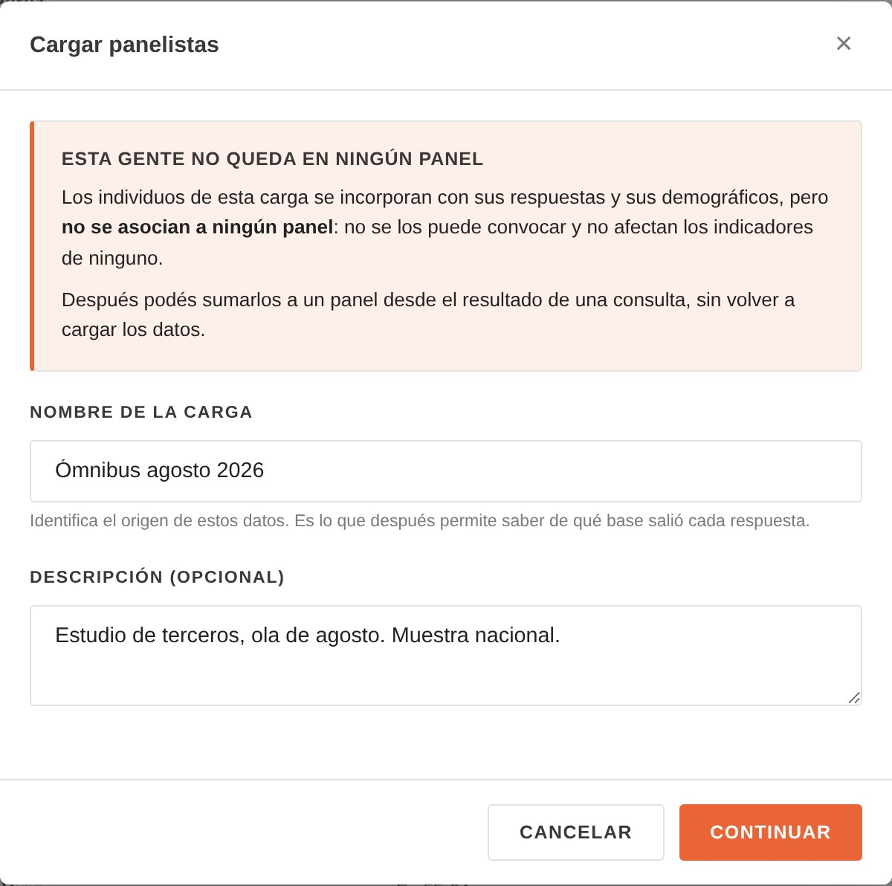
Inicio de una carga. Lo único que se pide en este paso es
un nombre, que después permite saber de qué base salió cada respuesta. El
aviso naranja indica la condición que define el flujo.
Tras confirmar el nombre se abre la misma pantalla de ingesta
que se describe en las secciones 5.4 y 5.5: archivo, columna que identifica al
respondente, mapeo de variables a preguntas, marcado de variables demográficas
y modo de resolución de individuos. El procedimiento es idéntico, de modo que
no hay un flujo nuevo que aprender.
Las dos diferencias son las siguientes.
No se crea ninguna membresía ni ninguna participación. Es
precisamente lo que este flujo evita. Las personas incorporadas no entran en la
composición, en la brecha, en el muestreo ni en las convocatorias de ningún
panel, y el resumen del final no informa esas cifras, porque no se producen.
La finalidad obligatoria del consentimiento se invierte. Al
ingestar desde una encuesta, una fila que no evidencia el consentimiento de
contacto y participación no da de alta a la persona. En una carga sin
panel la finalidad obligatoria es el uso semántico, que es la
base de lo único que se va a hacer con esos datos; el consentimiento de
contacto es opcional. Quien no lo evidencie se incorpora igual, pero no podrá
ser convocado nunca: la restricción descrita en la sección 5.2 se mantiene sin
cambios.
Qué hacer si la persona ya estaba en el sistema
Nada especial. La carga aplica la misma deduplicación que el alta manual
(sección 3.3): reutiliza el identificador existente, suma sus respuestas y
completa los campos vacíos de su ficha. Sus paneles no se
modifican, ni se agregan ni se quitan.
Las personas incorporadas de este modo aparecen en el listado con
0 paneles y se aíslan con la opción — Sin panel — del
desplegable.
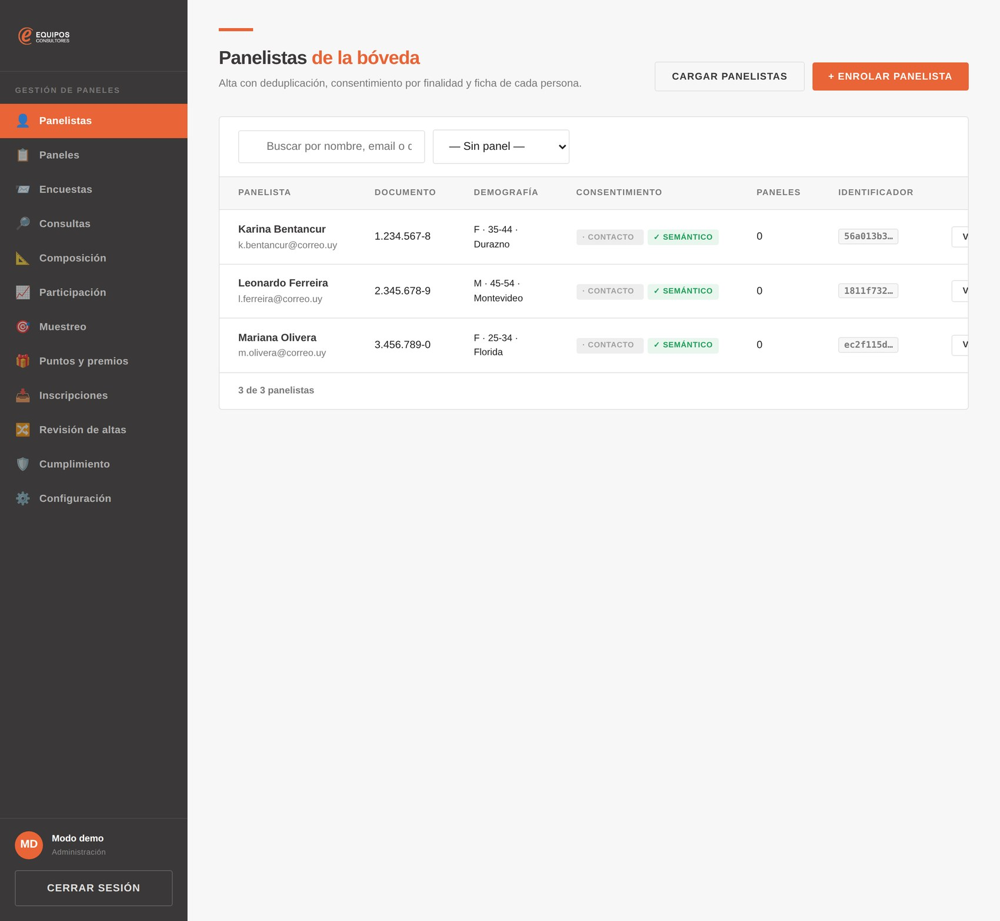
Individuos sin panel. Quedaron incorporados con sus
respuestas y sus demográficos, con consentimiento de uso semántico y sin
consentimiento de contacto: son consultables y no convocables.
Desde ese momento son consultables con normalidad: entran en las consultas
semánticas y en los filtros demográficos de la sección 6. Si más adelante se
decide sumar a algunos de ellos a un panel, se hace desde el resultado
de una consulta, sin volver a cargar los datos.
El orden recomendado
Cargar, consultar y recién entonces crear el panel con quienes interesen.
Así se incorpora únicamente a quien corresponde, en lugar de sumar la base
completa a un panel y depurarla después.
3.7 Canales de contacto
El consentimiento de contacto y participación responde una
pregunta: si se puede contactar a esa persona. No responde
la otra: por dónde. Alguien puede aceptar que lo llamen por
teléfono y no querer recibir mensajes en su WhatsApp personal.
Por eso la ficha tiene una tarjeta aparte, Canales de contacto, con
los cuatro canales que el sistema maneja: WhatsApp, correo electrónico,
teléfono y SMS.
La regla de los dos ejes
Para enviar por un canal hacen falta los dos: el
consentimiento de contacto vigente y la preferencia de ese
canal activa. Si falta cualquiera de los dos, esa persona no recibe nada
por ese canal.
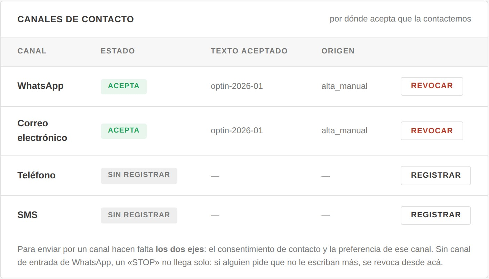
Canales de una persona. La columna Texto aceptado
identifica con qué texto se obtuvo cada autorización: es lo que la vuelve
demostrable.
Los canales se registran en los tres caminos por los que entra una
persona: al enrolarla a mano, al crearla desde un archivo de campo —declarando
qué variable evidencia la autorización, igual que con el consentimiento— y en
el formulario público, donde la propia persona los elige.
WhatsApp necesita un celular válido
El canal de WhatsApp exige un celular en formato internacional
(+59899123456). El sistema convierte los números escritos en
formato local, pero si el dato cargado no es un teléfono, la autorización
de WhatsApp no se puede activar y la pantalla lo informa. El alta se
completa igual: lo único que queda pendiente es ese canal.
Cuando alguien pide que no le escriban más
Se revoca el canal desde esta misma tarjeta. La revocación queda
registrada con su fecha y no afecta a los demás canales ni
al consentimiento de contacto: son decisiones distintas.
Un pedido por WhatsApp no llega solo
El sistema envía mensajes de WhatsApp pero no recibe respuestas. Si una
persona bloquea el número o responde «STOP», ese pedido no llega
automáticamente: hay que revocarle el canal a mano desde acá. Los
reportes de Meta permiten detectar estos casos y conviene revisarlos
periódicamente.
3.8 El formulario público de inscripción
Además del alta interna, una persona puede inscribirse por su cuenta desde
un formulario público. Esas solicitudes no crean panelistas: quedan en la
bandeja de Inscripciones hasta que alguien las aprueba, y recién ahí se
crea la persona.
Dónde está el enlace
En la pantalla de Inscripciones, arriba de todo: la dirección del
formulario con un botón para copiarla y otro para abrirla. Es el enlace que
se reparte —por correo, por redes, en un pie de mail— para que la gente se
inscriba.
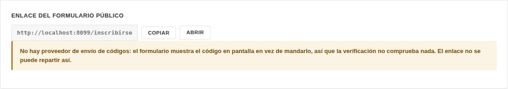
El enlace, con su estado. Debajo de la dirección, si el
formulario está en condiciones de recibir gente. Acá falta el proveedor de
envío de códigos, así que todavía no conviene repartirlo.
Dos cosas tienen que estar antes de repartirlo
Un texto de consentimiento publicado, porque sin él el
formulario rechaza a todo el mundo; y un proveedor de envío de
códigos, porque sin él el código se muestra en la propia pantalla
en lugar de enviarse, y entonces la verificación no comprueba nada: quien
lo pide lo recibe, tenga o no acceso a ese correo.
Las dos fallan en silencio —el formulario carga igual— y por eso la
tarjeta las informa. Mientras alguna falte, dice que el enlace no se puede
repartir.
Verificación del contacto
Quien se inscribe debe verificar su correo electrónico
con un código de un solo uso, y también su celular si lo declara. Sin esa
verificación la solicitud no llega a la bandeja.
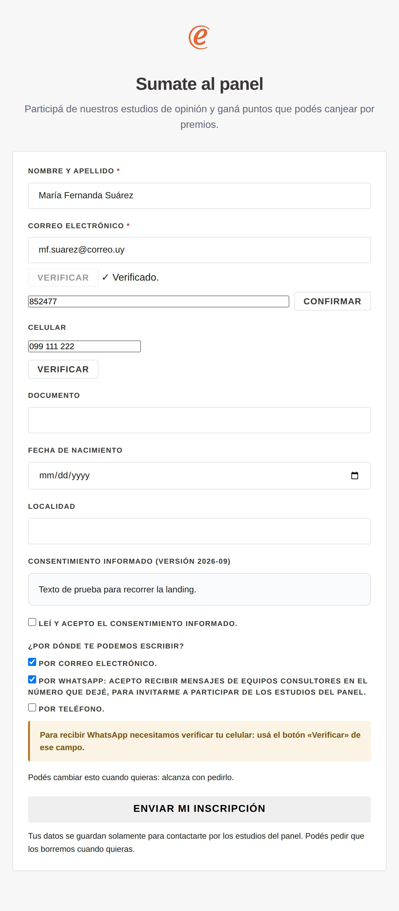
El formulario público. Cada contacto tiene su botón de
verificación. Debajo del consentimiento, la persona elige por qué canales
acepta que la contacten.
Por qué se verifica
Un contacto sin verificar abarca dos situaciones y ambas son
problemáticas: un dato inventado, que ensucia la bandeja, y —más grave— el
dato de otra persona, que equivale a inscribir a alguien sin su
conocimiento. Los códigos vencen, la cantidad de intentos es limitada y
también lo es la cantidad de códigos que se pueden pedir.
Al aprobar: los panelistas parecidos
Este es el único camino en el que la persona completa sus datos sin que
nadie del equipo lo supervise, de modo que es donde resulta más probable que
alguien se inscriba dos veces con datos levemente distintos. Por eso, al
aprobar, la pantalla muestra los panelistas ya existentes que se le
parecen —por documento, correo, celular, o nombre y fecha de
nacimiento— indicando por cuál de esos datos coincide cada uno.
Se proponen, no se fusionan
Salvo la coincidencia exacta de documento, que el sistema resuelve solo,
la decisión es de quien aprueba. Una coincidencia de
correo o de nombre y fecha puede corresponder a un homónimo, y unificar dos
personas distintas no tiene vuelta atrás.
Si se indica que es la misma persona, no se crea ningún registro nuevo:
se completan los datos que faltaban en su ficha y se le registran el
consentimiento y los canales que declaró en el formulario.
Sección 4
Paneles
Agrupar personas en paneles estables y administrar sus membresías.
Un panel es un conjunto estable de personas sobre el que se fieldean
encuestas de forma repetida. Una misma persona puede pertenecer a varios
paneles sin duplicarse: lo que se repite es la membresía, no la persona. Darla
de baja de un panel no afecta a los demás ni a su historial.
Paneles. Cada fila indica cuántos miembros activos tiene
el panel y cuántas encuestas se le fieldearon.
4.1 Crear un panel
Se utiliza + Nuevo panel y se completan el nombre y una
descripción breve. La descripción no es un requisito formal: cuando pasa el
tiempo y hay varios paneles conviviendo, es lo que permite recordar para qué se
había creado cada uno.
4.2 Ver y agregar miembros
Al abrir un panel se accede a su padrón, con el estado de consentimiento de
cada miembro y la fecha en que se incorporó.
Miembros del panel. El desplegable superior permite
alternar entre los miembros activos y los que fueron dados de baja.
Para incorporar personas se utiliza + Agregar panelistas,
se las busca por nombre, correo o documento y se seleccionan las que
correspondan.
Agregar panelistas. Incorporar a alguien que ya es miembro
no genera un duplicado: la operación se puede repetir sin
consecuencias.
4.3 Quitar a alguien de un panel
La opción Quitar de cada fila da de baja la membresía. La
persona deja de formar parte de ese panel y de sus futuras convocatorias, pero
sigue existiendo en el sistema, conserva su historial y mantiene sus
membresías en los demás paneles. No es un borrado; para eso está la baja total,
que se describe en la sección 9.
Sección 5
Encuestas
Fieldear una ola, convocar al panel e incorporar las respuestas al
sistema.
Cada encuesta —u ola— es un relevamiento concreto sobre un panel, con su
fecha de campo y su propio ciclo: se crea, se convoca, se releva en la
plataforma de campo habitual y finalmente se ingestan las respuestas.
Encuestas y olas. La barra verde indica la tasa de
respuesta. El ref_estudio es el código que vincula la encuesta
con sus respuestas del lado semántico.
5.1 Crear una encuesta
Utilizar + Nueva encuesta.
Elegir el panel al que se le va a fieldear, indicar el nombre de la ola y
la fecha de campo.
Confirmar con Crear.
Nueva encuesta. Al crearla se genera automáticamente su
ref_estudio, un código que no hay que recordar ni
manipular.
La encuesta nace en estado borrador y pasa a
en campo apenas se convoca a alguien. Al terminar el
relevamiento conviene cerrarla, para que quede claro que ya no admite nuevas
convocatorias.
Detalle de la encuesta. Desde aquí se convoca, se ingestan
las respuestas y se verifica el cruce entre las dos bases.
5.2 Convocar al panel
Convocar al panel incorpora a todos los miembros activos a
la convocatoria de esa ola. Antes de ejecutarla, el sistema recuerda la regla
que va a aplicar.
Antes de convocar. Solo entran quienes tengan vigente el
consentimiento de contacto y participación.
Al finalizar, el resumen indica cuántas personas quedaron efectivamente
convocadas y cuántas quedaron fuera por no tener el consentimiento
correspondiente. Esa diferencia no es un error del sistema: es la regla
funcionando, y conviene revisarla cuando el número de convocados resulta menor
al esperado.
Resultado. Las personas sin consentimiento de contacto
quedan fuera y el sistema lo informa explícitamente.
5.3 Exportar la muestra para el campo
Convocada la ola, Exportar muestra baja un archivo con
una fila por convocado y una sola columna: el identificador del
sistema de cada persona. Ese archivo se le pasa al equipo de campo
para que lo precargue como variable oculta en el instrumento, de
modo que vuelva junto con las respuestas.
Por qué conviene hacerlo
Las plataformas de campo asignan un identificador propio a cada
respondente, y suelen generar uno nuevo en cada estudio.
Si la ingesta depende de ese número, al cargar un estudio nuevo no
coincide ninguna fila y el resultado queda en cero sin que nada dé error.
Precargar el identificador del sistema elimina el problema: el archivo
vuelve con la referencia correcta.
El archivo además no lleva datos personales. El
identificador es un código opaco, así que puede circular por la plataforma
y por correo sin exponer a nadie.
Si el equipo de campo necesita además llamar a la gente o enviarle un
enlace, la casilla Incluir datos de contacto agrega nombre,
documento, correo y celular. Eso es una reidentificación:
requiere el permiso correspondiente, queda registrada con el usuario que la
pidió y el archivo se marca como portador de datos personales, igual que la
exportación de una consulta (sección 6.5).
5.4 Ingestar las respuestas
Terminado el campo, las respuestas se incorporan desde
Ingestar respuestas. El archivo esperado es el export habitual
de la plataforma de campo, en formato ancho: una fila por
persona, una columna por pregunta, y el encabezado de cada columna con el
código de esa pregunta.
Arrastrar o seleccionar el archivo .xlsx o
.csv.
Confirmar cuál es la columna que identifica al respondente
y, al lado, qué tipo de identificador contiene. Ver más
abajo: es la decisión que determina si las respuestas se van a poder
vincular con las personas.
Completar el texto de cada pregunta. Los códigos vienen
del archivo, pero el texto se escribe aquí y es determinante: es lo que
después permite encontrar esa respuesta buscando por significado.
En las preguntas cerradas, cargar las opciones con el formato
1=Televisión; 2=Redes sociales, de modo que el sistema conserve
la etiqueta y no el número.
Revisar la última columna: qué es cada variable. Ver más
abajo.
Confirmar con Ingestar.
Qué identificador trae la columna
Opción
Cuándo usarla
El id_persona del sistema
La preferida. Se precargó la muestra en el
instrumento (sección 5.3) y el archivo la devuelve. El vínculo es
directo y no depende de lo que haga la plataforma de campo.
El id de la plataforma de campo
La opción por omisión, y la que funcionaba hasta ahora. Sirve cuando
ese identificador es el mismo que se cargó al enrolar. Cuidado: muchas
plataformas generan uno nuevo en cada estudio, y en ese caso no va a
coincidir ninguna fila.
El documento
Respaldo, cuando no se pudo precargar. Al terminar, el sistema
registra el identificador de esa plataforma, de modo que la próxima
carga del mismo estudio ya no lo necesite.
El correo
Igual que el documento. No distingue mayúsculas.
Cuando alguna fila no se puede vincular, el resultado dice por
qué: si el valor no tiene la forma de un identificador del sistema,
si el identificador no existe en la bóveda, o si esa plataforma no tiene
registrado ese número. Las tres se corrigen de forma distinta.
Qué es cada variable: preguntas y demográficos
La última columna de cada fila define si esa variable es una
pregunta del estudio o un dato demográfico.
La diferencia no es de presentación: decide a cuál de las dos bases va a
parar.
Si se marca como
Qué pasa con esa variable
Pregunta del estudio
Se ingesta al store semántico: se vectoriza su texto y queda
disponible para las consultas por significado.
Demográfica · un campo
No se ingesta. Su valor va a la ficha del panelista
—sexo, localidad, fecha de nacimiento, nombre, documento, correo,
celular, contacto—, en la bóveda.
Demográfica · no guardar
No se ingesta y tampoco se guarda. Es para los
demográficos que la ficha no tiene, como la edad: el sistema guarda la
fecha de nacimiento y deriva el tramo etario de ahí.
Por qué los demográficos no se vectorizan
Los segmentadores —sexo, localidad, tramo etario— son autoritativos en
la bóveda y no se duplican del lado semántico. Tenerlos en los dos lugares
no mejora ninguna consulta, porque el filtro demográfico se resuelve
siempre contra la bóveda, y sí aumenta el riesgo de que alguien pueda
reidentificar a una persona combinando datos del store semántico.
El sistema sugiere qué variables parecen demográficas
por su nombre y su etiqueta, pero no decide: la marca queda a la vista para
confirmarla o corregirla. Conviene mirarla, porque una misma variable puede
ser un segmentador en un estudio y ser el objeto de análisis en otro
—«¿en qué barrio vive?» es demográfico en un estudio de consumo y es
el dato en uno sobre barrios—.
De los demográficos marcados, el sistema completa lo que falte en la ficha
del panelista. Lo que ya está cargado no se pisa: si el
archivo trae un valor distinto, se informa la discrepancia al terminar y la
ficha queda como estaba. El archivo de un estudio puede traer un dato viejo o
mal tipeado, y una ingesta no es el lugar para cambiar la identidad de
alguien.
El campo de códigos sigue al tipo de pregunta
Tipo
Campo de códigos
Cerrada · Escala
Habilitado, con el mapeo completo: 1=Televisión; 2=Redes
sociales. Si se deja vacío, se avisa: sin etiquetas se embebe el
número y no la respuesta.
Numérica
Habilitado, pero solo para los valores especiales:
98=No sabe; 99=No contesta. Es una traducción que importa,
porque «¿Cuántos años tiene? → 99» es ruido y «→ No contesta» es
información.
Abierta
Deshabilitado: no hay códigos que traducir. Si la variable tenía
etiquetas, se avisa que se van a descartar.
Ingesta. El recuadro superior detalla exactamente qué
información cruza al store semántico y qué se queda en la bóveda. En la
lista de variables, la última columna define cuáles son preguntas del
estudio y cuáles son demográficos que no se vectorizan.
El resultado informa cuántas respuestas se escribieron, cuántas personas
quedaron representadas y, sobre todo, dos cifras que conviene mirar siempre:
las filas sin mapear y las personas sin
consentimiento.
Resultado de la ingesta. «Sin mapear» y «sin
consentimiento» dicen si algo quedó afuera; las cinco cifras de abajo,
cómo se movieron el panel y la ola.
Una fila sin mapear es una fila cuyo identificador no
corresponde a ninguna persona del sistema; suele deberse a que se la enroló
sin cargarle el «Id en el origen». Una persona sin
consentimiento, en cambio, respondió pero no otorgó el uso
semántico: sus respuestas no se conservan, y eso es correcto.
La ingesta incorpora al panel y registra quién respondió
No hace falta que una persona haya sido convocada desde el sistema para
que sus respuestas cuenten. Si el archivo la trae, la ingesta hace dos cosas
además de escribir sus respuestas: la da de alta como miembro del
panel de esa encuesta —si todavía no lo era— y registra que
respondió. Por eso el resultado informa cinco cifras más.
Cifra
Qué significa
Nuevos miembros del panel
Respondieron pero no eran miembros. Ahora lo son: entran en el
muestreo, en la composición y en «convocar al panel».
Ya eran miembros
Nada que hacer con ellos.
Con baja en el panel
Respondieron, pero alguien les había dado de baja la membresía.
No se reactiva sola. Si corresponde reincorporarlos, se
hace desde la pantalla del panel.
Participaciones nuevas
Respondieron sin haber sido convocados desde el sistema. Antes no
figuraban en la ola; ahora sí, y la tasa de respuesta los cuenta.
Participaciones actualizadas
Ya estaban convocados y quedaron marcados como que respondieron.
Ser miembro no es lo mismo que poder ser convocado
Que la ingesta incorpore a alguien al panel no habilita a contactarlo.
Registrar que una persona respondió en campo es dejar constancia de algo
que ya pasó; invitarla a una ola futura es otra cosa, y para eso sigue
haciendo falta su consentimiento de contacto vigente. Quien no lo tenga
seguirá quedando fuera de toda convocatoria, por más participaciones que
acumule.
Por la misma razón, una participación que salió de un archivo
no cuenta como convocatoria en el tablero de
participación ni en el «último contacto»: a esa persona no la contactó
nadie desde el sistema. Sí cuenta como respuesta.
Reingestar el mismo archivo no duplica nada
Si se detecta un error en el texto de una pregunta, alcanza con
corregirlo y volver a ingestar el mismo archivo. El sistema reconoce lo que
ya estaba y solo actualiza lo que cambió, de modo que la operación puede
repetirse sin riesgo. Tampoco se duplican membresías ni participaciones, y
la fecha de la primera respuesta se conserva.
5.5 Ingestar un archivo de SPSS y dar de alta a los panelistas
Cuando el export de campo es un archivo .sav de SPSS, el
procedimiento es el mismo pero el sistema trabaja bastante más. El archivo se
sube entero y se analiza en el servidor: de ahí salen ya cargados los códigos
de las variables, el texto de cada pregunta y las etiquetas de las opciones,
sin necesidad de tipearlos.
Lo que propone el archivo es una propuesta, no un hecho
SPSS recorta los textos de las variables a 256 caracteres y muchos
cuestionarios los dejan en códigos crípticos del tipo P5_1.
Como el texto de la pregunta es exactamente lo que después permite
encontrar la respuesta buscando por significado, conviene revisarlo antes
de confirmar: todo lo que el análisis propone es editable.
Con un .sav aparece además una pregunta que no existe en el
resto de las ingestas: ¿los panelistas ya están en el sistema?
Si el relevamiento se hizo sobre gente enrolada, la respuesta es que sí y solo
hay que vincular las respuestas. Si el archivo trae gente que todavía no está
—el caso típico de una encuesta de calle con la que se quiere armar panel—,
se elige darlos de alta en esta carga.
La base legal del alta
Dar de alta a alguien desde un archivo es enrolarlo, y no se enrola a nadie
sin consentimiento. Por eso este modo exige declarar de dónde sale la prueba:
qué variable del archivo evidencia el consentimiento y qué valor de
esa variable cuenta como afirmativo, para cada una de las dos
finalidades —integrar el panel y ser contactado, por un lado; uso semántico de
las respuestas entre estudios, por el otro—. Puede ser la misma variable para
las dos; lo que no puede es faltar.
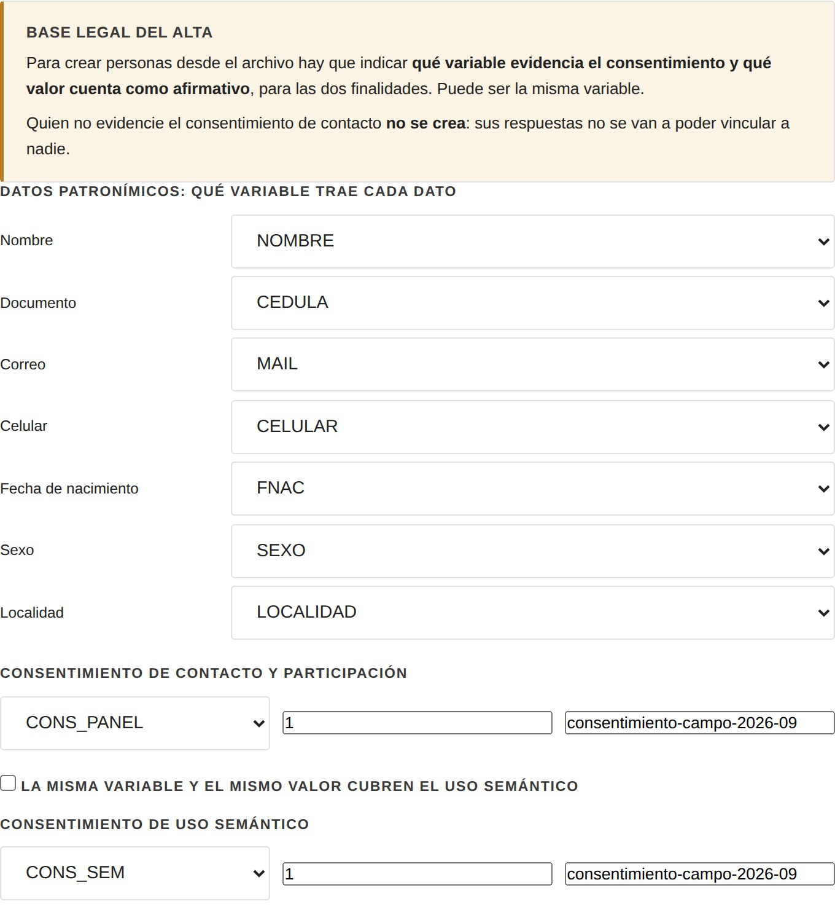
Evidencia de consentimiento. Por cada finalidad se
declara la variable, el valor que cuenta como «sí» y la versión del texto
que la persona consintió en campo. Si una sola pregunta cubre las dos
finalidades, la casilla del medio evita repetir la declaración.
Indicar, para cada dato patronímico —nombre, documento, correo, celular,
fecha de nacimiento, sexo, localidad—, qué variable del archivo lo
trae. Ninguno es obligatorio por separado, pero sin documento,
correo ni nombre no hay con qué identificar a la persona.
Elegir la variable de consentimiento de contacto y
escribir el valor afirmativo tal como está codificado en el
archivo: normalmente 1, a veces Sí. Mayúsculas y
espacios no importan.
Anotar la versión del texto consentido: la referencia
del texto que se le leyó a la persona en campo. Es lo que después vuelve
demostrable qué fue lo que consintió.
Si la misma pregunta cubre el uso semántico, dejar marcada la casilla.
Si el cuestionario tenía dos preguntas distintas, desmarcarla y declarar la
segunda.
Confirmar con Ingestar.
Esto se decide antes del campo, no al importar
Para que haya una variable que declarar, el cuestionario tiene que
incluir la pregunta de consentimiento. Es una decisión del diseño del
formulario: si el .sav no la trae, no hay forma de dar de alta
a esa gente desde el archivo, y el enrolamiento tiene que hacerse por la vía
manual de la sección 3.
Qué le pasa a cada fila
Declarada la evidencia, el sistema evalúa fila por fila y clasifica cada
una. El resultado de la ingesta informa cuántas cayeron en cada caso.
Situación de la fila
Qué hace el sistema
Consintió las dos finalidades
Se crea la persona, con los dos consentimientos registrados y la
versión del texto declarada. Sus respuestas se ingestan al store
semántico.
Consintió el contacto pero no el uso semántico
Se crea la persona y se la puede convocar, pero sus respuestas
no pasan al store semántico. Cada finalidad se evalúa por
separado.
No consintió el contacto
No se crea nada. No queda a medias ni «pendiente»: esa persona no
entra a la bóveda, y sus respuestas no se van a poder vincular a
nadie.
Ya estaba en el sistema
Se reutiliza su registro. El consentimiento que trae el archivo se
registra igual si le faltaba, y no se duplica si ya lo tenía.
Coincide parcialmente con alguien
Queda en la bandeja de revisión de altas (sección
3.4), con su consentimiento a cuestas, para que una persona decida si es
la misma o es otra.
Sin documento, correo ni nombre
Se informa como fila sin datos suficientes. No se crea nada: no hay
con qué identificar a nadie.
Las cifras que conviene mirar siempre son dos. Las filas sin
consentimiento de contacto: si son muchas más de las esperadas, lo
más probable es que el valor afirmativo declarado no sea el que usa el
archivo —1 cuando en realidad el «sí» está codificado como
2, por ejemplo—; se corrige la declaración y se vuelve a
importar. Y las personas que consintieron el contacto pero no el uso
semántico: no es un error, es el sistema respetando lo que cada una
decidió.
Volver a importar el mismo archivo es seguro
Si hubo que corregir la declaración o el texto de una pregunta, se vuelve
a importar el mismo archivo. Las personas que ya existían se reutilizan y
los consentimientos ya registrados no se duplican.
5.6 Enviar la encuesta por WhatsApp
Una encuesta puede configurarse para enviarse como un Flow de
WhatsApp. El sistema solamente envía: las
respuestas se descargan de Meta y se ingestan por el procedimiento habitual
(sección 5.4). No recibe respuestas ni permite crear los Flows.
El Flow y la plantilla se crean en Meta
El Flow y la plantilla de mensaje se arman y se publican en la
plataforma de Meta. La plantilla requiere aprobación de
Meta y la revisión demora: no es posible crear la plantilla y
convocar el mismo día.
Elegir la plantilla
Lo único que se configura en esta pantalla es cuál de las
plantillas aprobadas de la cuenta usar. Se elige de una lista, y
nada más: cada plantilla lleva adentro su idioma y el Flow que abre su
botón, así que no hay que copiar ningún identificador desde Meta.
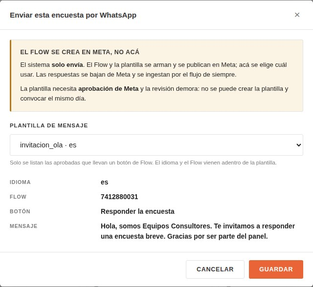
La lista muestra solo lo que sirve. Únicamente las
plantillas aprobadas que llevan un botón de Flow. Al elegir una se ven su
idioma, el Flow que abre y el texto del mensaje, para confirmar que es la
correcta antes de guardar.
El mismo nombre en dos idiomas son dos plantillas
En Meta, una plantilla se identifica por su nombre y su
idioma: cada versión se aprueba por separado y puede estar en estados
distintos. Por eso la lista muestra las dos —invitacion_ola ·
es y invitacion_ola · pt_BR— como opciones separadas, y
el sistema no elige una por usted: sería decidir en qué idioma se le habla
a la gente.
El sistema comprueba contra Meta que la plantilla esté aprobada y que el
Flow que lleva adentro esté publicado, antes de permitir el
envío. Si algo falta, lo indica con su motivo en lugar de dejar enviar y
fallar mensaje por mensaje.
A quiénes se envía
Solo a quienes cumplen los dos ejes —consentimiento de
contacto vigente y autorización de WhatsApp activa (sección 3.7)— y además
tienen un celular válido. Quienes no cumplen quedan fuera, y la pantalla
informa por qué motivo cada uno.
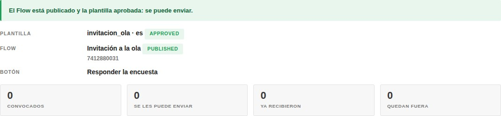
Antes de enviar. Arriba, qué plantilla quedó
configurada —con su idioma, porque es lo que distingue dos versiones del
mismo nombre— y si el Flow está publicado. Abajo, a cuántos se les puede
enviar y cuántos quedan fuera. Los motivos se detallan por separado porque
se resuelven de manera distinta: a unos hay que pedirles el
consentimiento, a otros ofrecerles el canal y a otros cargarles el
celular.
Motivo
Cómo se resuelve
Sin consentimiento de contacto
Corresponde solicitarlo: sin él no se puede contactar a esa persona
por ningún medio.
No aceptó recibir WhatsApp
Tiene consentimiento de contacto, pero no autorizó ese canal. Hay
que ofrecérselo y registrarlo en su ficha.
Sin celular cargado
Autorizó el canal pero su ficha no tiene número. Se completa desde
Panelistas.
Celular inválido
El dato cargado no es un número de teléfono utilizable. Se corrige
en la ficha.
Reintentar no duplica mensajes
Si algún envío falla, se puede reintentar: el sistema envía únicamente a
quienes no recibieron el mensaje. Un mensaje duplicado deteriora la
reputación del número emisor, y esa reputación es la que determina si Meta
permite seguir enviando.
El envío no reemplaza a la convocatoria
La convocatoria se registra igual que siempre y el envío es una acción
sobre ella. Es posible convocar sin enviar, y enviar más
tarde.
5.7 Verificar el cruce entre las dos bases
La opción Verificar comprueba que lo que quedó del lado
semántico se corresponda con lo convocado del lado de la bóveda. Es la
comprobación que confirma que el puente entre ambas bases funcionó para esa
ola.
Cruce entre stores. Las dos bases comparten el mismo
ref_estudio, y las personas con respuestas del lado semántico
salen de las que fueron convocadas.
Es esperable que el número de individuos del lado semántico sea menor que el
de convocados: no todos responden, y de los que responden solo se conservan las
respuestas de quienes otorgaron el uso semántico.
Sección 6
Consultas
Encontrar personas por lo que respondieron, y no solo por sus datos.
Las secciones anteriores permiten filtrar por lo que el sistema
sabe de cada persona: su sexo, su edad, su localidad. Esta pantalla
responde una pregunta distinta, que hasta ahora exigía revisar planillas a
mano: quiénes dijeron algo parecido a esto.
El criterio se escribe en lenguaje corriente —«gente a la que le encanta el
fernet»— y el sistema lo busca entre las respuestas de todas las encuestas
ingestadas. No busca esas palabras exactas: busca respuestas que
signifiquen eso, aunque estén formuladas de otra manera.
6.1 Los dos tipos de criterio
Una consulta se arma con criterios, y los criterios son de dos tipos que
cumplen funciones distintas. Entender esa diferencia es lo que permite armar
consultas útiles.
Un criterio semántico es una frase en lenguaje natural
sobre lo que la gente respondió, y su función es ordenar.
Nadie lo cumple del todo o no lo cumple en absoluto: cada persona se aproxima
más o menos, y de esa aproximación sale el puntaje que define el ranking.
Un criterio demográfico, en cambio, se elige de una lista
—sexo, tramo etario, localidad o edad— y su función es
filtrar. Quien no lo cumple queda fuera del resultado, sin
matices.
Ambos se pueden combinar libremente. Una consulta que utiliza los dos tipos
se denomina consulta mixta: el filtro demográfico recorta el
universo y el criterio semántico ordena lo que quedó dentro.
6.2 Armar y ejecutar una consulta
Entrar a Consultas y utilizar + Criterio
semántico.
Escribir la frase. Cuanto más se parezca a lo que una persona diría en
una entrevista, mejor funciona: «gente a la que le encanta el fernet» da
mejores resultados que «fernet» a secas, porque esa palabra sola también
trae a quienes dijeron que no lo toman.
Ejecutar con Consultar.
El criterio. El peso interviene cuando hay varios
criterios: uno con peso 3 influye el triple que uno con peso 1 en el puntaje
final. La casilla duro lo convierte en filtro, de modo que quien no lo
cumple queda fuera del resultado.El resultado completo. Los criterios arriba; luego cómo se
resolvió la consulta; después el ranking, las exclusiones y el
diagnóstico.
6.3 Leer el ranking
El resultado es una lista ordenada de personas, con la información
necesaria para juzgar cada posición.
El ranking. Una fila por persona, ordenada por
puntaje.
Columna
Qué informa
Persona
El id_persona, no el nombre. El resultado de una consulta
son identificadores; resolver a quién corresponden es un paso aparte, que
se describe en 6.5.
Puntaje
Un valor entre 0 y 1. Sirve para comparar entre sí a
las personas de una misma consulta, no para comparar resultados de
consultas distintas.
Confianza
Indica si la evidencia que sostiene esa posición es sólida. La marca
baja señala que la mejor respuesta
encontrada ya no se aproxima demasiado al criterio, o que falta evidencia
de alguno de los criterios. No excluye a la persona: la señala.
Criterios
El veredicto para cada criterio: Cumple,
Dudoso o Sin evidencia.
Evidencia
La respuesta concreta que sostiene esa posición, con el estudio y la
pregunta de los que proviene.
La última columna es la más importante de todas. Un ranking sin evidencia
no se puede verificar, y por eso el sistema nunca devuelve una posición sin
mostrar en qué se apoya. La opción Ver de cada fila abre el
detalle completo: el puntaje de cada criterio, el motivo del veredicto y la
respuesta textual con su procedencia.
El detalle. La cita entre comillas es textual: proviene
del registro de la respuesta y no la redacta el sistema.
6.4 Quiénes quedaron fuera, y por qué
Debajo del ranking aparece la tabla de excluidos. No es una
lista de descartes: con frecuencia es la parte del resultado que más explica
al resto, porque muestra a quienes el sistema consideró y decidió dejar
fuera.
Exclusiones. El caso característico es el de quien
respondió «fernet» a qué bebida consume y «no me gusta el fernet» a por qué
la elige: habla del tema y afirma lo contrario.
Motivo
Qué significa
No cumple
Alguna de sus respuestas afirma lo contrario del
criterio. Queda fuera siempre, en cualquiera de los dos modos.
Dudoso
Sus respuestas tocan el tema pero no alcanzan para decidir. Queda fuera
en modo estricto; en modo laxo entra penalizada.
Sin evidencia
No tiene ninguna respuesta próxima a ese criterio. Se comporta igual
que el caso anterior.
Por qué se examina más de una respuesta por persona
El sistema no juzga a cada persona por su mejor respuesta, sino por todas
las que quedaron próximas al criterio. Si lo hiciera solo por la mejor, quien
se contradice entraría al ranking apoyado en la respuesta que le resulta
favorable y la contradicción quedaría oculta. Ese es exactamente el error que
esta etapa está para evitar.
6.5 Resolver a quiénes corresponden los identificadores
El ranking devuelve identificadores. Para convocar a esas personas hacen
falta el nombre y los datos de contacto, y obtenerlos es una operación
independiente: Ver quiénes son, en el encabezado del
ranking.
Antes de resolver. El sistema advierte que la operación
queda registrada, con el usuario que la realiza, la fecha y el
motivo.Después. El mismo ranking, ahora con nombre y apellido
sobre cada identificador.
El registro no es un obstáculo: es la contrapartida
Traducir un identificador a una persona concreta es lo que deshace la
separación entre las dos bases. La operación está prevista y es legítima
—para eso existe el puente—, pero queda anotado quién la realizó y cuándo.
Ese registro es lo que permite demostrar, ante una consulta o una auditoría,
que el acceso a datos personales está controlado y no es indiscriminado.
Exportar el resultado
Descargar CSV genera un archivo con tres columnas: el
id_persona, el puntaje y la evidencia con su procedencia. El
archivo no incluye nombres ni correos: está pensado para
entregárselo a quien arma la muestra sin que los datos personales salgan del
sistema.
6.6 Modo estricto y modo laxo
El desplegable Modo define qué hacer con las personas
sobre las que el sistema no llega a una conclusión firme.
En modo estricto quedan fuera quienes no presentan
evidencia clara del criterio. Es el modo indicado cuando la lista se va a
utilizar tal como sale y se prefiere perder algunos casos antes que incorporar
a alguien que no corresponde.
En modo laxo esas personas se incluyen, con puntaje cero en
el criterio que no pudieron acreditar y marcadas como penalizadas. Es el
modo indicado cuando la lista se va a revisar manualmente y se prefiere ver de
más.
Hay una regla que no cambia entre modos: quien afirma lo contrario del
criterio queda fuera en ambos. Lo que el modo laxo tolera es la duda y la
ausencia de evidencia, no la contradicción.
6.7 Sumar un filtro demográfico
Utilizar + Criterio demográfico.
Elegir la dimensión, el operador y el valor. Para el operador «es alguno
de», los valores se separan con coma.
Criterio demográfico. Se resuelve contra los datos de la
bóveda, que es donde viven el sexo, la localidad y la fecha de
nacimiento.Consulta mixta. Los criterios se acumulan y cada uno se
puede quitar por separado.
Al ejecutar una consulta mixta, el resultado informa además cómo
se resolvió: si el sistema filtró primero por demografía y después buscó entre
las respuestas, o al revés. La decisión la toma automáticamente, según cuál de
los dos lados recorta más, y queda registrada en la respuesta para que el
resultado sea reproducible.
Cómo se resolvió. Informa también cuántas personas pasaron
el filtro de consentimiento: son las únicas que pueden llegar a
aparecer.
Solo aparece quien otorgó el uso semántico
Una consulta semántica alcanza únicamente a las personas que tienen
vigente la finalidad uso semántico. Quien no la otorgó
no aparece nunca: ni en el ranking ni entre las
exclusiones, porque no llega siquiera a ser considerada.
Cuando una consulta devuelve mucho menos de lo esperado, el primer dato a
revisar es la cantidad de «personas habilitadas en el segmento». Si esa cifra
es baja, el problema no está en el criterio sino en la cobertura del
consentimiento.
6.8 Guardar una consulta
Una consulta que se va a repetir se guarda con Guardar
consulta y se recupera desde el desplegable Cargar una
guardada….
Se guarda la pregunta, no la respuesta. Al volver a
ejecutarla, la lista se arma nuevamente con el padrón vigente en ese
momento.
Esa distinción tiene consecuencias prácticas. Si el sistema guardara el
resultado, al cabo de un mes devolvería una lista de personas que quizá ya
retiraron su consentimiento o dejaron el panel. Al guardar la definición, cada
ejecución vuelve a pasar por el filtro de consentimiento y por el padrón
actualizado.
6.9 Parámetros y diagnóstico
La opción Parámetros expone tres ajustes. Los valores por
defecto son adecuados para el uso habitual; se modifican cuando una consulta
devuelve poco o cuando demora más de lo tolerable.
Parámetros. Se aplican únicamente a la consulta en
curso.
Parámetro
Conviene aumentarlo si…
Conviene reducirlo si…
Pool de recuperación
Hay motivos para pensar que se está perdiendo gente que debería
aparecer.
—
A verificar
Se necesita un ranking más extenso.
La consulta demora demasiado: es el parámetro que más incide en el
tiempo de respuesta.
Umbral de confianza
Casi todo el ranking sale marcado con confianza baja aunque los
resultados sean correctos.
Se está marcando como confiable algo que no lo es.
Al pie de cada resultado aparece el diagnóstico: cuánto
demoró cada etapa y cuántos candidatos pasaron por ella. Es la herramienta
para entender por qué una consulta devolvió lo que devolvió.
Diagnóstico. Cuando un ranking resulta más corto de lo
previsto, permite identificar en qué etapa se produjo la
reducción.
Si aparece un aviso en ámbar sobre el ranking
Significa que una de las etapas de la consulta no pudo ejecutarse
—habitualmente porque venció la clave de un servicio externo— y el sistema
continuó sin ella en lugar de interrumpir la operación. El resultado
se puede utilizar igualmente, aunque su ordenamiento es
menos preciso que de costumbre. Conviene informarlo a quien administra el
sistema.
Sección 7
Composición
Cuánto se parece el panel al universo que pretende representar.
El tamaño de un panel dice poco por sí solo. Mil personas no sirven de mucho
si todas viven en Montevideo y ninguna supera los treinta años. Esta pantalla
muestra cómo está compuesto el panel y, cuando hay un universo de referencia
cargado, cuánto le falta para parecerse a él.
Composición. Una tarjeta por dimensión: sexo, tramo etario
y localidad.
7.1 Sin universo de referencia cargado
Cuando una dimensión no tiene objetivo cargado, su tarjeta muestra la
distribución observada y señala la brecha como
brecha no disponible.
«No disponible» no equivale a «cero»
La distinción es deliberada. Una columna de brecha vacía se leería como
«la composición es correcta», cuando en realidad lo que ocurre es que no hay
contra qué compararla. Sin universo de referencia, la composición describe
pero no evalúa.
7.2 Cargar el universo de referencia
El universo de referencia establece cómo debería estar compuesto el panel:
por ejemplo, 52 % de mujeres y 48 % de varones. Puede provenir del censo, de
una encuesta continua de hogares o de la definición que el propio estudio haya
adoptado como su población objetivo.
Utilizar Cargar universo de referencia. La operación
requiere rol de Administración o de Responsable de panel.
Elegir la dimensión. Se carga de a una por vez.
Completar las categorías y su proporción,
en tanto por uno: 0,52 y no 52.
Verificar el total al pie del formulario: debe dar
1,000.
Universo de referencia. La opción Precargar con lo
observado completa las categorías con la composición actual del panel
para evitar tipearlas; a continuación hay que corregir los valores al
universo real.
Por qué el sistema exige que las proporciones sumen 1
Una dimensión cargada a medias —que suma 0,8, por ejemplo— no produce una
brecha incompleta: produce todas las brechas equivocadas,
porque cada proporción se compara contra un total que no cierra. Por eso el
sistema la rechaza al cargarla, en lugar de aceptarla y mostrar cifras que
parecen correctas y no lo son.
7.3 Interpretar la brecha
Los miembros sin el dato cargado
Quien no tenga cargada la variable de una dimensión no se cuenta en
ninguna de sus categorías: se informa aparte, debajo de la tabla. Los
porcentajes observados son sobre quienes sí la tienen, que es la única
base sobre la cual las proporciones suman 100 % y la comparación con el
universo significa algo. Contarlos como una categoría más haría que la
brecha de todas las demás indique un déficit inexistente.
Con el objetivo cargado, cada categoría muestra su situación en cuatro
columnas. % observado indica cómo está compuesto el panel hoy
y % objetivo cómo debería estarlo. La brecha
es la diferencia entre ambos, expresada en puntos porcentuales y destacada en
ámbar cuando es negativa, es decir, cuando falta gente de esa categoría.
Faltan / sobran traduce esa misma brecha a personas: cuántas
habría que incorporar o cuántas hay de más.
En el encabezado de cada dimensión aparece además la
disimilitud, que resume la situación en un solo número: qué
proporción del panel habría que mover de categoría para que calzara con el
universo de referencia. Un 0 % indica un calce perfecto.
7.4 El cruce de dos dimensiones
El desplegable superior arma una tabla cruzada, por ejemplo sexo por tramo
etario. Es donde se hacen visibles los huecos que las dimensiones tomadas por
separado no revelan.
Sexo por tramo etario. Las celdas con un punto están
vacías: en esa combinación no hay nadie.
Un panel puede tener la proporción correcta de mujeres y la proporción
correcta de mayores de 65 años, y aun así no contar con
ninguna mujer mayor de 65. Las distribuciones marginales no lo
muestran; el cruce sí. El cruce es puramente descriptivo y no incluye brecha,
porque el universo de referencia se carga por dimensión y no por celda
cruzada.
Sección 8
Participación
Quién responde, cuánto hace que no se contacta a cada persona y cómo se
reparten las convocatorias.
Un panel se desgasta con el uso. Los panelistas se fatigan si se los convoca
permanentemente, y se enfrían si no se los convoca nunca. Esta pantalla reúne
la información necesaria para tener eso en cuenta antes de armar la próxima
ola.
Participación. Los indicadores generales en la parte
superior; debajo las distribuciones y las listas de trabajo.
8.1 Las tres preguntas que responde el tablero
¿El panel responde? La tasa de respuesta, general y por
ola, es el indicador de salud más directo. Un panel de mil personas con un 15 %
de respuesta es, en los hechos, un panel de ciento cincuenta.
¿Cuánto hace que no se contacta a cada persona? La
distribución de último contacto sirve para los dos extremos: evitar
sobreexponer a quien acaba de responder varias olas seguidas, y detectar a
quien no se contacta desde hace un año y está próximo a perderse.
¿El reparto es parejo? La distribución de convocatorias por
miembro muestra si el esfuerzo se concentra en unos pocos. Cuando el decil más
convocado acumula la mayor parte de las convocatorias, la muestra deja de ser
del panel y pasa a ser de ese grupo reducido; el tablero lo advierte
expresamente cuando esa concentración supera el umbral razonable.
8.2 Las listas de trabajo
Debajo de las distribuciones, el tablero ofrece tres listas pensadas para
actuar sobre ellas:
Sin contacto hace más de 30 días reúne a quienes se
están enfriando. Cuando vuelve la convocatoria, la tasa de respuesta de este
grupo suele ser sensiblemente menor.
Nunca contactados son quienes integran el panel y
todavía no fueron utilizados. Habitualmente es el mejor lugar donde buscar
gente nueva para una ola.
Más convocados señala a los candidatos a fatiga.
Conviene revisar esta lista antes de incorporarlos a otra ola.
Un clic sobre cualquier fila abre la ficha de esa persona.
Cada panel contabiliza lo suyo
Una misma persona puede integrar varios paneles. Las convocatorias que
recibió en otro panel no se contabilizan aquí: el tablero considera
únicamente las olas del panel seleccionado en el desplegable superior.
8.3 La tabla de olas
Al pie se listan las encuestas del panel, con la cantidad de convocados y de
respuestas, la tasa resultante y el estado de calidad de las respuestas
recibidas. Es la vista adecuada para comparar el desempeño de una ola con el de
la anterior y detectar cambios de tendencia.
Sección 9
Análisis longitudinal
Cómo se movió la misma gente a lo largo de las olas.
Es lo único que un panel tiene y una muestra fresca no: las mismas
personas, medidas en distintos momentos. Una encuesta de opinión le pregunta
a mil personas distintas cada vez y puede decir que el pesimismo subió cinco
puntos. Un panel puede decir además quiénes cambiaron de opinión, y
esa es una pregunta distinta.
La pantalla tiene tres solapas, y son tres porque responden tres preguntas
que no se parecen entre sí.
9.1 Las series: declarar que dos preguntas miden lo mismo
El obstáculo es que cada cuestionario redacta la pregunta a su manera. Una
ola pregunta «¿Qué bebida consume habitualmente?» con las opciones
Fernet / Whisky / Cerveza, y la del año siguiente pregunta «¿Cuál es
hoy su bebida de consumo habitual?» con Fernet con cola / Whisky /
Cerveza. Para una persona es evidente que miden lo mismo. Para el sistema
son dos preguntas distintas, y así tiene que ser: si las diera por
equivalentes por su cuenta, tarde o temprano daría por equivalentes dos que
no lo son, y esa equivalencia quedaría escrita en el dato, donde ya nadie la
ve.
Por eso la equivalencia se declara. Una serie agrupa las
preguntas de las distintas olas y lleva las opciones de cada una a un
vocabulario común.
Para crear una serie hacen falta dos cosas: un nombre y las
categorías comunes, que son las que van a poder compararse entre olas.
En el ejemplo alcanza con dos: fernet y otra.
Después se agrega la primera pregunta con el botón Agregar una
pregunta, eligiéndola de la lista de todas las olas. A partir de ahí el
sistema puede buscar las equivalentes.
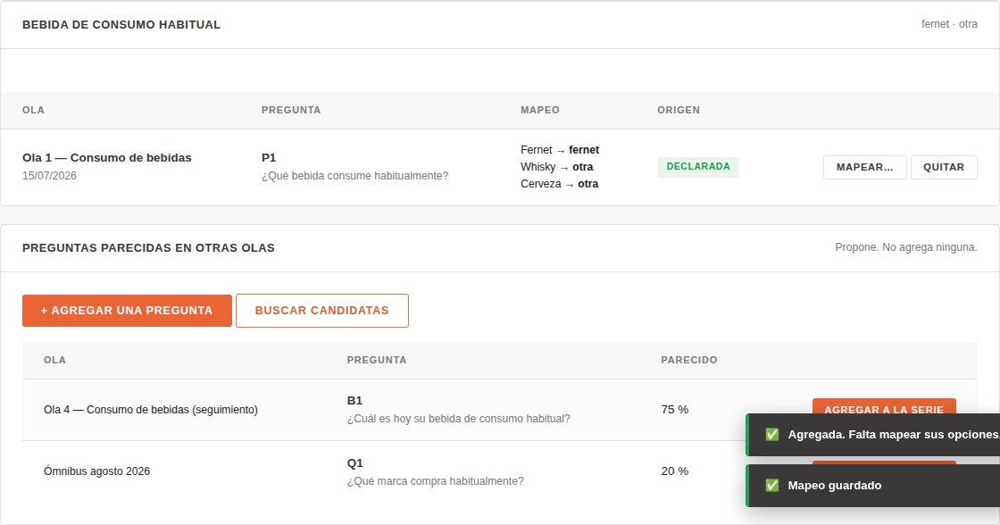
El sistema propone; no agrega. «Buscar candidatas» lista
las preguntas de otras olas que se le parecen, con el porcentaje de
parecido. El botón para agregarlas está al lado de cada una, no arriba de
la lista: entra la que usted elija, de a una.
Un parecido alto no es una garantía
«¿Qué marca compra habitualmente?» y «¿Qué bebida consume
habitualmente?» se parecen mucho en las palabras y miden cosas distintas.
El porcentaje ordena la lista para que no tenga que buscar a mano; la
decisión de que dos preguntas son la misma medición sigue siendo suya.
9.2 Mapear las opciones
Agregar la pregunta no alcanza: hay que decir qué opción de esa ola
corresponde a qué categoría común. Eso se hace con Mapear…, que abre
una lista con las opciones de esa pregunta y un desplegable por cada una.
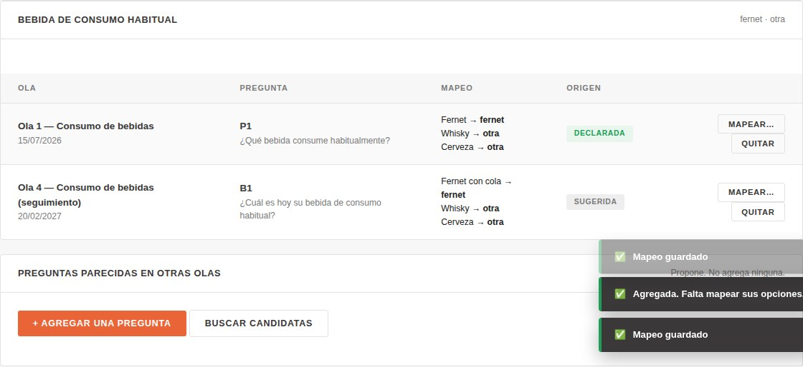
La serie completa. Dos olas, con redacciones y opciones
distintas, llevadas al mismo vocabulario. La columna Origen distingue
las que agregó usted («declarada») de las que aceptó de una sugerencia
(«sugerida»).
Lo que no se mapea, no se cuenta
Si deja una opción sin categoría, las personas que la eligieron quedan
fuera de la comparación y la pantalla lo avisa arriba. Es deliberado: si
esas respuestas se sumaran a cualquier categoría, el movimiento entre olas
mostraría cambios que no ocurrieron.
9.3 La evolución: quiénes cambiaron
Con la serie armada, la solapa Evolución muestra la matriz de
movimiento entre dos olas: cuántas personas pasaron de cada categoría a cada
otra.
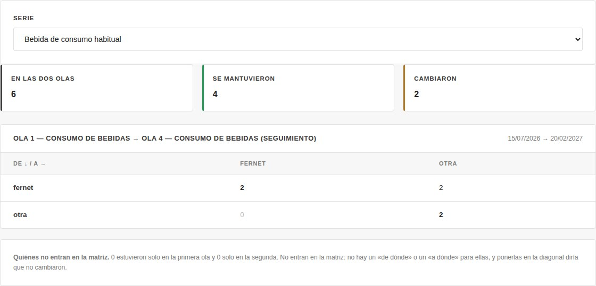
Se lee por fila. La diagonal —en negrita— son los que se
mantuvieron; todo lo que está fuera de ella es movimiento. Acá, de los seis
que participaron en las dos olas, cuatro se mantuvieron y dos
cambiaron.
Al pie hay una aclaración que conviene leer: quiénes no entran en la
matriz. Una persona que participó en una sola de las dos olas no aparece,
y no es un olvido. No hay un «de dónde» o un «a dónde» para ella, y ponerla
en la diagonal afirmaría que no cambió de opinión, que es algo que nadie
midió.
9.4 La historia de una persona
La tercera solapa muestra la línea de tiempo de una persona: en qué olas
participó, cuándo, y qué contestó en cada una.
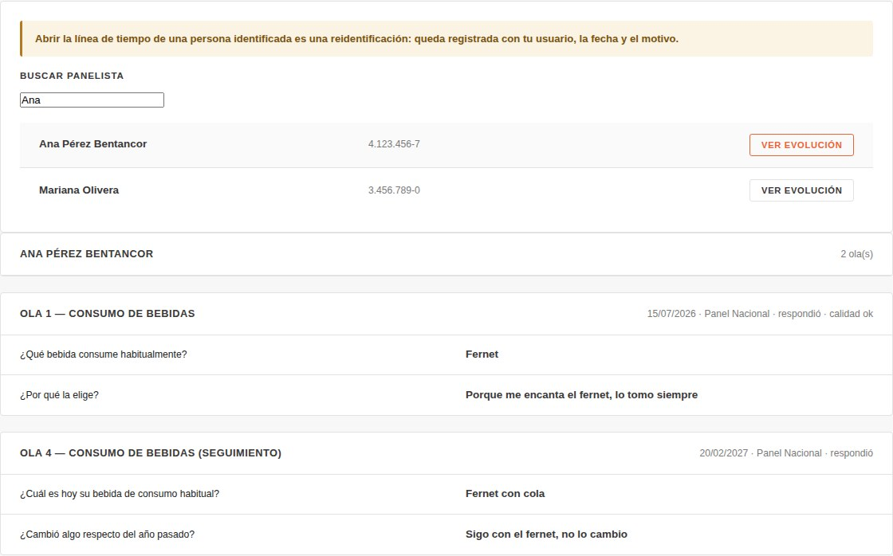
Una ola por tarjeta, en orden cronológico. Con las
respuestas de cada una, para poder leer la evolución en las propias
palabras de la persona.
Esto es una reidentificación y queda registrada
Ver la historia de respuestas de una persona identificada es unir su
nombre con lo que contestó, que es justamente la operación que la
separación entre las dos bases existe para controlar. La pantalla lo avisa
antes de que usted busque, y cada consulta queda anotada con su usuario, la
fecha y el motivo, igual que abrir una ficha o exportar una convocatoria.
No es una traba: es el registro que permite responder «quién vio qué»
cuando alguien lo pregunte.
9.5 La composición de una ola pasada
Hay una corrección que no está en esta pantalla y conviene conocer, porque
cambia un número que el sistema ya venía mostrando.
Los atributos demográficos ahora guardan desde cuándo vale cada
valor. Antes se guardaba un único valor y el anterior se perdía, con una
consecuencia que no era evidente: recalcular la composición de una ola de
hace un año la calculaba con la demografía de hoy. Una cuota que cerró
con 30 % de menores de 35 podía mostrar 22 % un año después sin que nadie se
hubiera ido del panel, solamente porque esa gente cumplió años.
Desde ahora la composición se puede pedir a una fecha o
a una ola, y devuelve la foto de entonces: los valores que estaban
vigentes y las personas que eran miembros ese día.
La brecha se compara contra el universo de hoy
El universo de referencia no guarda historia: al cargar uno nuevo
reemplaza al anterior. Así que una composición retroactiva muestra la foto
de entonces contra el universo cargado hoy, y la pantalla lo aclara. Si el
universo cambió en el medio, la brecha hay que leerla con eso en
cuenta.
Sección 10
Muestreo
A quién invitar para cerrar la cuota sin volver a convocar a los mismos.
Elegir a quién invitar tiene dos objetivos que en general conviven y a
veces se contradicen: que la muestra se parezca al universo de referencia, y
no desgastar a los panelistas convocándolos todo el tiempo. Cuando el panel
tiene holgura los dos se cumplen sin esfuerzo. Cuando no la tiene —un
segmento chico y muy usado— hay que elegir cuál ceder, y esa elección es de
quien conduce el estudio, no del sistema.
Por eso la pantalla ofrece dos métodos y los deja convivir.
10.1 Los dos métodos
Proponer usa reglas: prioriza los segmentos con más brecha y
descarta a quien no tiene consentimiento vigente o superó los umbrales de
fatiga. Es directo y suficiente en la mayoría de los casos.
Optimizar negocia. Busca el conjunto que mejor cierra la brecha
penalizando —no prohibiendo— la fatiga y el desgaste de los mismos
panelistas de siempre. Aparece cuando las reglas se quedan cortas: segmentos
escasos en los que todos los elegibles están muy convocados.
El botón Comparar con las reglas corre los dos sobre la misma
pregunta y muestra la diferencia. Sirve para justificar ante alguien por qué
esta vez se usó uno y no el otro; cuando hay holgura, las dos selecciones
suelen coincidir.
10.2 Por qué entró cada persona
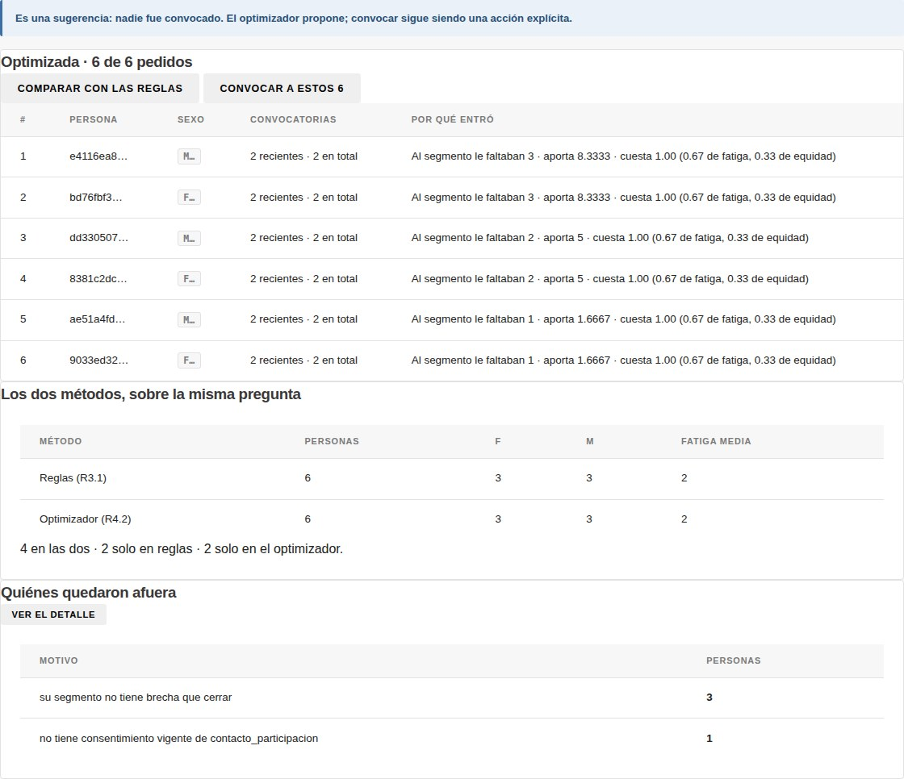
Cada fila se explica. Cuánto le faltaba a su segmento
cuando entró, cuánto aporta a cerrar la brecha y cuánto cuesta en fatiga y
en desgaste. Abajo, la comparación con las reglas.
Que cada selección sea explicable no es un adorno. Una lista de nombres
sin fundamento no se puede defender ante un investigador que pregunte por qué
está esta persona y no aquella, y una herramienta que no se puede defender no
se usa.
Hay cosas que ningún peso compra
El consentimiento vigente, la preferencia del canal por el que se va a
convocar y la pertenencia al panel son condiciones absolutas: por mucha
brecha que haya, quien no las cumple no entra. Lo que se negocia es la
fatiga y el reparto, nunca el permiso.
10.3 Cuando la cuota no se puede cerrar
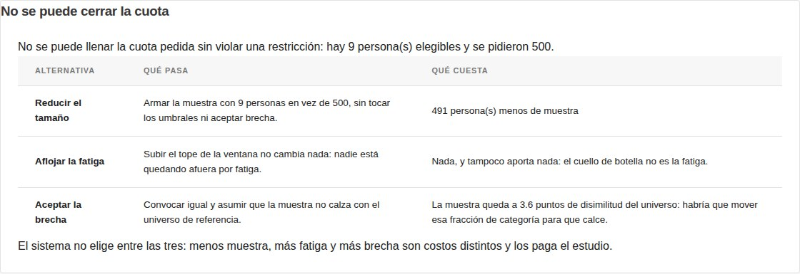
Las tres salidas, con su costo. Reducir el tamaño,
aflojar los umbrales de fatiga o aceptar la brecha. El sistema las
cuantifica y no elige.
Cada alternativa viene con su número: cuántas personas menos tendría la
muestra, cuántas más pasarían a ser convocables si se afloja el umbral, y a
cuánta distancia del universo quedaría la muestra si se acepta la brecha.
Elegir entre menos muestra, más desgaste y menos representatividad es una
decisión del estudio, y el sistema no la toma: la informa.
10.4 Los pesos
Pesos del optimizador… permite ajustar cuánto vale cerrar la cuota
frente a cuidar a la gente, por panel. Un panel chico y muy usado necesita
pesar la fatiga mucho más que uno grande.
Los valores por defecto no están medidos
Igual que los umbrales de fatiga, los pesos vienen con valores
razonables pero sin calibrar contra la experiencia de Equipos. Conviene
revisarlos cuando haya suficientes olas para comparar.
Una última cosa, que vale para los dos métodos: el muestreo propone y
no convoca. Lo que devuelve es una sugerencia; convocar sigue siendo una
acción explícita, con su propio botón y su propia confirmación.
Sección 11
Cumplimiento
Atender los derechos de los panelistas. Disponible para los roles de
Administración y Cumplimiento.
Cuando un panelista solicita que dejen de contactarlo, que no se utilicen
más sus respuestas o directamente retirarse del panel, el sistema prevé una
operación distinta para cada caso. Las tres se encuentran en su ficha, en el
bloque Derechos del titular.
11.1 Las tres opciones
Si la persona solicita…
Corresponde
Efecto
Que no se utilicen más sus respuestas
Retirar uso semántico
Se eliminan sus respuestas del store semántico. La persona
continúa en el panel y puede seguir siendo
convocada.
Que no la contacten más
Retirar contacto
Sale del muestreo: sus membresías se dan de baja. Sus respuestas se
conservan, porque las consintió por separado.
Retirarse del panel
Baja total
Se elimina todo: sus datos personales, sus respuestas y sus
membresías.
Que las dos primeras opciones sean independientes no es un detalle técnico:
refleja que las finalidades se consintieron por separado y que retirar una no
autoriza a suponer que se retira la otra.
11.2 La baja total
La baja total ejecuta el borrado en cascada sobre las dos bases. Antes de
aplicarla, el sistema detalla exactamente qué va a eliminar.
Confirmación. El sistema enumera las consecuencias antes
de ejecutar la operación.
Es una operación irreversible
No existe forma de deshacerla. Los datos se eliminan efectivamente de las
dos bases. Si la persona vuelve a incorporarse más adelante habrá que
enrolarla desde cero y recibirá un identificador nuevo: su historial anterior
no se recupera.
De la baja queda constancia —con la fecha y con quién la solicitó— pero
sin ningún dato personal asociado. Ese registro mínimo es lo que permite
demostrar, si alguien lo requiere, que la solicitud fue atendida.
11.3 La pantalla de Cumplimiento
Cumplimiento. A la izquierda, la auditoría y las bajas
incompletas; a la derecha, el recordatorio del alcance de cada
retiro.
Auditoría del store semántico
La opción Auditar ahora revisa que no se haya incorporado
ningún dato personal del lado semántico. El resultado debe indicar siempre
0 columnas. Si alguna vez informara otra cosa, corresponde
avisar de inmediato a quien administra el sistema antes de continuar
trabajando: significaría que la separación entre las dos bases dejó de estar
garantizada.
Bajas con borrado pendiente
Una baja implica borrar en dos bases distintas, y la segunda operación puede
fallar por un problema de red. Cuando eso ocurre, la baja se completa de todos
modos —los datos personales se eliminan— y el caso queda listado en esta
sección. La opción Reintentar vuelve a ejecutar el borrado
pendiente. Una lista vacía indica que no quedó nada a medio hacer.
Sección 12
Configuración
Quién accede al sistema y con qué rol. Disponible únicamente para el rol
de Administración.
Esta solapa otorga y retira el acceso al sistema. Dar de alta a una persona
con rol de Administración equivale a darle acceso a toda la
bóveda, incluidos los datos personales de todos los panelistas. Esa es
la razón por la que la solapa solo la ve Administración y por la que todas las
operaciones que se realizan aquí quedan registradas.
El padrón. Una fila por persona con acceso. El rol se
modifica directamente desde el desplegable, sin pasar por ninguna otra
pantalla.
12.1 Dar de alta a una persona
Utilizar + Dar de alta un usuario.
Indicar el correo institucional de Equipos, el nombre y
el rol. Debajo del selector de rol se describe el alcance de cada uno.
Confirmar.
Alta. Si ya existe una cuenta con ese correo, el sistema
no crea otra ni modifica su contraseña: actualiza la ficha y el
rol.
Al crear una cuenta nueva, el sistema presenta un enlace para que la persona
defina su propia contraseña.
El enlace de acceso. Conviene copiarlo antes de cerrar el
cuadro de diálogo. Si se pierde, se genera otro desde el padrón.
La contraseña inicial no queda almacenada
La cuenta se crea con una contraseña aleatoria que el sistema no guarda y
que nadie llega a ver. La persona ingresa por ese enlace y define la suya. El
enlace tampoco se almacena: un enlace de restablecimiento guardado equivale a
una contraseña guardada.
El enlace debe transmitirse por un canal privado.
Si el cuadro se cierra antes de copiar el enlace, el enlace no se recupera,
pero puede emitirse uno nuevo: el botón Enlace de acceso de la
fila correspondiente del padrón genera otro en el momento. Es la misma
operación que ¿Olvidaste tu contraseña? en la pantalla de
ingreso, con la diferencia de que la solicita un administrador; por ese motivo
queda registrada en la auditoría, con el autor y la fecha.
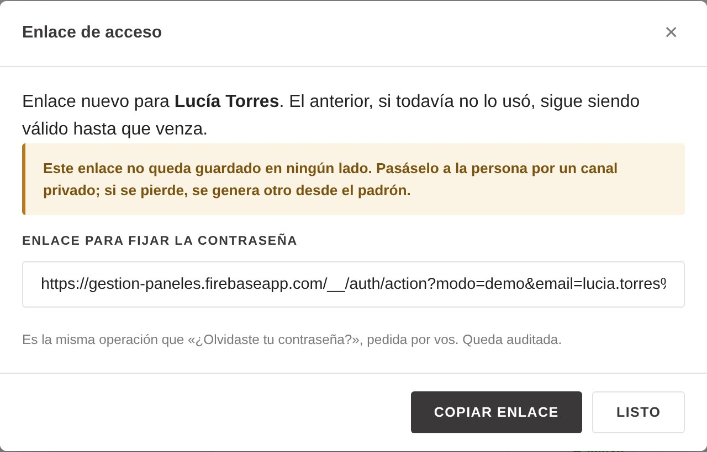
Un enlace nuevo. El anterior, si la persona todavía no lo
utilizó, sigue siendo válido hasta que venza.
Un usuario desactivado no recibe enlace: se generaría igual y la persona
seguiría sin poder ingresar. Corresponde reactivarlo primero.
12.2 Cambiar un rol
El rol se modifica eligiendo otro en el desplegable de la fila
correspondiente. El cambio tiene efecto a partir de la operación
siguiente de esa persona, sin necesidad de que vuelva a ingresar al
sistema.
12.3 Desactivar un usuario
La opción Desactivar interrumpe el acceso sin eliminar
nada: la ficha, la actividad realizada y el registro de sus operaciones se
conservan. Eliminar al usuario borraría precisamente el rastro que corresponde
preservar. Para restituir el acceso se utiliza Reactivar en la
misma fila.
Nadie puede quitarse su propio rol ni desactivarse
En la fila del propio usuario, el selector de rol y el botón de desactivar
aparecen deshabilitados, y junto al nombre figura la marca
vos.
La restricción tiene un motivo concreto: si el último administrador se
quita el rol o se desactiva, no queda nadie en condiciones de
dar de alta a nadie, y recuperar el sistema pasa a ser una tarea técnica que
requiere credenciales del servidor. Cuando hace falta modificar el propio
rol, debe hacerlo otro administrador.
12.4 La auditoría
Auditoría. Cada alta, cambio de rol, desactivación y
reactivación, con su autor y su fecha.
El registro solo admite agregados: no se puede editar ni
eliminar desde la aplicación. Es lo que permite responder con precisión quién
otorgó acceso a una persona determinada y en qué momento, sin depender de la
memoria de nadie.
12.5 Los cuatro roles
Rol
A quién corresponde
Administración
Acceso completo, incluida esta pantalla. Conviene que sean
pocos.
Responsable de panel
Quien mantiene el panel: enrola, arma paneles, convoca, consulta y
puede resolver a qué persona corresponde cada identificador.
Analista
Quien trabaja con los datos: fieldea, ingesta y consulta. No enrola, no
da de baja y no resuelve identificadores a personas.
Cumplimiento / DPO
Quien responde por el tratamiento de los datos personales: consulta
toda la información, atiende retiros y bajas, y revisa el registro de
accesos.
12.6 Atributos demográficos
La segunda solapa de esta pantalla define con qué se puede
segmentar al panel. Cada atributo del catálogo sirve en los cuatro
lugares donde intervienen los segmentadores: los filtros de una consulta
(sección 6.7), las dimensiones de la composición y su brecha (sección 7),
las cuotas de un objetivo de referencia y el equilibrio de un muestreo.
El sistema viene con cuatro definidos: sexo,
localidad, tramo etario y
edad. Los dos últimos son derivados: el sistema los
calcula y no se cargan a mano. Cualquier otro segmentador —nivel educativo,
nivel socioeconómico, ocupación, composición del hogar— se agrega desde
acá, sin necesidad de pedir un desarrollo.
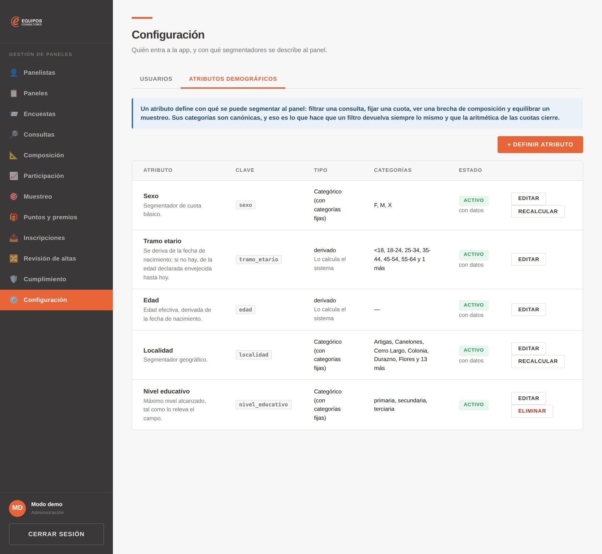
El catálogo. La columna Clave es el
identificador estable con el que el resto del sistema nombra al atributo.
Los marcados con datos ya tienen valores cargados en fichas de
panelistas.
Definir un atributo
Se indica el nombre visible, una clave, el tipo y, si es categórico, sus
categorías canónicas. Esas categorías son los únicos
valores admitidos: es lo que hace que un filtro devuelva siempre lo mismo y
que la aritmética de las cuotas cierre. Sin un vocabulario cerrado
aparecerían veinte formas de escribir el mismo nivel y ninguna cuota
cerraría.
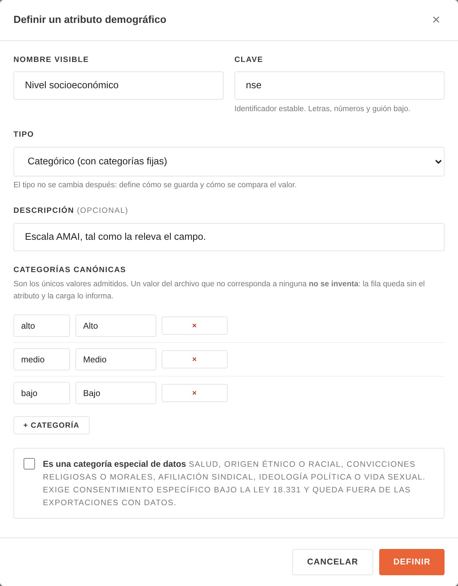
Un atributo nuevo. La clave se escribe una sola vez: una
vez que hay valores cargados no se puede cambiar, porque es lo que guardan
los objetivos de composición y la ficha de cada persona.
Qué se puede corregir después, y qué no
El nombre visible, la descripción y las etiquetas de
las categorías se corrigen en cualquier momento. La clave
del atributo y la de sus categorías, en cambio, quedan fijas una vez que
hay datos: cambiarlas dejaría los objetivos de composición y los valores
ya cargados apuntando a nada.
Un atributo con datos tampoco se elimina: se desactiva.
Deja de ofrecerse en cargas y filtros nuevos y conserva todo lo cargado.
Solo se pueden eliminar los que no tienen ningún valor.
Cuando un valor del archivo no corresponde a ninguna categoría
Al ingestar un archivo, un valor que no coincide con ninguna categoría
no genera una categoría nueva: esa fila queda sin el
atributo y el resultado de la carga lo informa con la lista de valores que
no se pudieron mapear. La corrección no obliga a volver a cargar el archivo:
se agrega la categoría que faltaba y se utiliza Recalcular,
que vuelve a resolver los valores a partir de lo que decía el archivo
original, conservado junto a cada valor.
Categorías especiales
Ley 18.331
Salud, origen étnico o racial, convicciones religiosas o morales,
afiliación sindical, ideología política y vida sexual son
categorías especiales de datos. Su tratamiento exige
consentimiento específico y protección reforzada: no alcanza con el
consentimiento del alta ni con el de la landing.
Al definir un atributo se puede declarar que corresponde a una de
ellas. El sistema entonces lo advierte, lo lista aparte para que su
existencia sea visible en una revisión de cumplimiento, y lo excluye de
las exportaciones con datos personales. Antes de definir un atributo de
este tipo conviene consultarlo con quien responde por la protección de
datos.
Dónde se ven los atributos de una persona
En su ficha (sección 3.5), en la tarjeta Atributos demográficos.
Además del valor, la tarjeta indica de dónde sale cada uno,
y eso importa especialmente para el tramo etario.
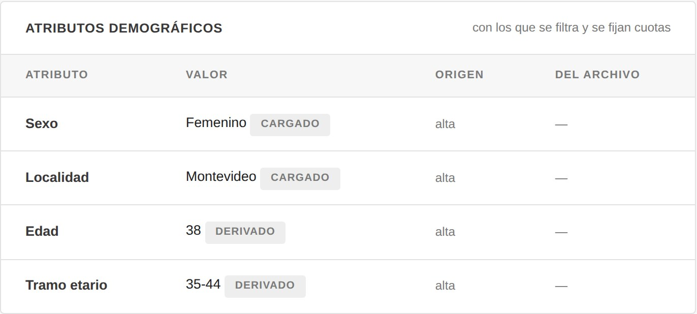
Atributos de una persona. La etiqueta junto a cada valor
indica su procedencia. Derivado es el caso más preciso: el sistema
lo calcula y siempre está al día.
Procedencia
Qué significa
Derivado
Se calcula a partir de la fecha de nacimiento. Es el caso más
preciso y siempre está actualizado. Ningún valor cargado lo
reemplaza.
Envejecido
La base no traía la fecha de nacimiento sino la edad. El sistema la
envejece desde la fecha de campo de esa carga, de modo que el tramo
sigue siendo el correcto con el paso de los años.
Cargado
El tramo vino del archivo tal cual y queda congelado: sin una fecha
de referencia no hay desde cuándo envejecerlo. Es el último
recurso.
Cuando no hay ningún dato de edad
Si una persona no tiene fecha de nacimiento, ni edad declarada, ni
tramo cargado, su tramo etario queda sin dato. No se
cuenta en ninguna categoría de edad, no infla ninguna cuota y el muestreo
no puede utilizarla para cerrar una brecha etaria: no se sabe a qué tramo
pertenece. Lo mismo vale para cualquier otro atributo.
Sección 13
Preguntas frecuentes
Situaciones habituales y su explicación.
Enrolé a una persona y no aparece en el listado
Lo más probable es que el alta haya quedado en Revisión de
altas. Ocurre cuando el alta no traía documento ni correo y coincidió
con alguien ya enrolado por nombre y fecha de nacimiento. Mientras la revisión
esté pendiente, esa persona todavía no existe en el sistema.
Convoqué al panel y entraron menos personas de las previstas
Las que faltan no tienen vigente el consentimiento de contacto y
participación. Integran el panel, pero no se las puede contactar. El resumen
que aparece al finalizar la convocatoria indica cuántas quedaron en esa
situación.
Ingesté el archivo y quedaron filas «sin mapear»
El identificador de esas filas no corresponde a ninguna persona convocada.
Las dos causas habituales son que la persona no haya sido convocada a esa
encuesta, o que se la haya enrolado sin cargarle el «Id en el origen». También
conviene verificar que la columna elegida en el paso 2 de la ingesta sea la
correcta.
Aparecieron personas «sin consentimiento» al ingestar
Están convocadas y respondieron, pero no otorgaron el uso semántico. Sus
respuestas no se conservan. Es el comportamiento correcto y no hay nada que
corregir.
Me equivoqué en el texto de una pregunta al ingestar
Alcanza con corregirlo y volver a ingestar el mismo archivo. El sistema no
duplica nada: reconoce lo que ya estaba y actualiza únicamente lo que
cambió.
Necesito corregir un dato de una persona
Desde su ficha, con Editar datos. La mayoría de los campos
se corrigen allí mismo.
El documento y el correo electrónico son
la excepción: se pueden completar si están vacíos, pero no se pueden modificar
una vez cargados. Son las dos claves con las que el sistema reconoce a la
persona, y cambiarlas equivaldría a convertir su registro en el de otra. Cuando
alguno de los dos quedó mal cargado, la corrección la realiza quien administra
el sistema.
Di de baja a alguien por error
Si la operación fue quitar del panel o retirar un
consentimiento, se puede revertir: alcanza con volver a agregar a la
persona al panel o con otorgarle nuevamente la finalidad. Si fue una
baja total, no hay reversión posible: habrá que enrolarla
desde cero y el historial anterior se perdió.
Ejecuté una consulta y no devolvió a nadie
El primer dato a revisar es la cantidad de personas habilitadas en
el segmento, en la tarjeta que aparece sobre el ranking. Si esa cifra
es baja o nula, el problema no está en el criterio: significa que muy pocas
personas tienen vigente el consentimiento de uso semántico,
que es el que habilita a examinar las respuestas. Si en cambio la cifra es alta
y el ranking igualmente quedó vacío, conviene probar con el modo
laxo o reformular el criterio.
En el ranking aparece alguien que afirma lo contrario
No debería ocurrir. Conviene abrir Ver en esa fila y leer
la evidencia completa; si el veredicto indica «Cumple» pero la respuesta es
claramente negativa, la fila incluye una advertencia. Corresponde informarlo a
quien administra el sistema. Mientras tanto, suele ayudar reformular el
criterio de manera más explícita: «gente a la que le encanta el fernet» en
lugar de «fernet» a secas.
¿Por qué la consulta muestra códigos y no nombres?
Porque el ranking se construye del lado de las respuestas, donde no hay
datos personales. La opción Ver quiénes son los resuelve, y
esa resolución queda registrada. No es un paso administrativo de más: es lo que
permite auditar quién accedió a los datos de quién.
La composición indica «brecha no disponible»
Falta cargar el universo de referencia de esa dimensión. No significa que la
brecha sea cero, sino que no hay contra qué comparar. La carga la realiza
Administración o el Responsable de panel, en la misma pantalla.
El sistema no acepta el universo de referencia que cargué
Las proporciones de una dimensión deben sumar 1. El total aparece al pie del
formulario y se destaca cuando no cierra. Además, los valores van en tanto por
uno: 0,52 y no 52.
No veo la solapa Configuración
Solo la ve el rol de Administración. Dar de alta usuarios equivale a otorgar
acceso a todos los datos personales del sistema, de modo que es una capacidad
reservada.
Quiero quitarme el rol de administrador y el sistema no lo permite
Es intencional. Si el último administrador se quita el rol o se desactiva,
no queda nadie en condiciones de dar de alta a nadie. El cambio debe realizarlo
otro administrador.
Apareció un aviso en ámbar sobre el ranking
Una de las etapas de la consulta no pudo ejecutarse y el sistema continuó
sin ella, informándolo. El resultado sigue siendo utilizable, aunque su
ordenamiento es menos preciso que de costumbre. Habitualmente se debe al
vencimiento de la clave de un servicio externo, por lo que corresponde
informarlo a quien administra el sistema.
Aparece un cartel celeste que dice «Modo demo»
Significa que se está trabajando sobre una copia de prueba con datos
ficticios, no sobre el sistema real. Nada de lo que se haga allí se conserva.
Corresponde solicitar la dirección correcta.
Sección 14
Glosario
Los términos que aparecen en pantalla.
Panelista
Persona que integra uno o más paneles. Es la misma persona en todo el
sistema, aunque participe de muchos estudios.
Panel
Conjunto estable de personas al que se le fieldean encuestas de forma
repetida.
Membresía
La pertenencia de una persona a un panel. Una persona puede tener
varias, y darse de baja de una no afecta a las demás.
Encuesta u ola
Un relevamiento concreto sobre un panel, con su fecha de campo.
Convocatoria
La invitación a los miembros de un panel a responder una
encuesta.
Consentimiento
El permiso otorgado por la persona, con la versión del texto que aceptó
y la fecha. Se compone de dos finalidades independientes.
Contacto y participación
La finalidad que habilita a convocar a la persona.
Uso semántico
La finalidad que habilita a conservar sus respuestas para poder
consultarlas por significado entre distintos estudios.
Bóveda
La base donde residen los datos personales y toda la gestión del
panel.
Store semántico
La base donde residen las respuestas y su representación vectorial, sin
datos personales.
id_persona
El código opaco que identifica a una persona en todo el sistema. Es lo
único que viaja al store semántico.
ref_estudio
El código que vincula una encuesta con sus respuestas del lado
semántico.
Id en el origen
El identificador que le asignó la plataforma de campo —Dooblo,
Alchemer— a esa persona. Es lo que permite enganchar sus respuestas al
ingestar.
Formato ancho
La forma en que llegan los export de campo: una fila por persona, una
columna por pregunta.
Deduplicación
La detección de que una persona que se está enrolando ya figuraba en el
sistema.
Tramo etario
El rango de edad, derivado de la fecha de nacimiento.
PII
Sigla de información personal identificable: nombre, documento,
correo, teléfono, fecha de nacimiento.
Criterio semántico
Una frase en lenguaje natural que describe lo que se busca en las
respuestas. Ordena el ranking; no filtra.
Criterio demográfico
Un filtro sobre los datos de la bóveda: sexo, tramo etario, localidad o
edad. Filtra; no ordena.
Consulta mixta
La que combina criterios de los dos tipos.
Evidencia
La respuesta concreta y textual que justifica la posición de una
persona en el ranking. Se muestra siempre con el estudio y la pregunta de
los que proviene.
Procedencia
El estudio y la pregunta de los que proviene una respuesta.
Veredicto
La conclusión del sistema sobre una persona para un criterio:
cumple, no cumple o dudoso.
Modo estricto y laxo
Qué hacer con las personas sobre las que no hay evidencia clara:
excluirlas o incluirlas penalizadas. Quien afirma lo contrario del criterio
queda excluido en ambos modos.
Confianza
Señal de si la evidencia que sostiene a una persona en el ranking es
sólida o débil. No la excluye: la señala.
Reidentificación
La traducción de un id_persona a nombre y datos de
contacto. Queda registrada con autor, fecha y motivo.
Universo de referencia
Las proporciones que el panel debería tener para representar a la
población de interés. Se carga por dimensión y debe sumar 1.
Brecha
La diferencia entre la composición del panel y la del universo de
referencia, en puntos porcentuales.
Disimilitud
Qué proporción del panel habría que mover de categoría para que calzara
con el universo de referencia. Un 0 % indica calce perfecto.
Tasa de respuesta
La proporción de convocados que efectivamente respondió.
Fatiga
El desgaste que produce convocar reiteradamente a las mismas personas.
Se observa en la distribución de convocatorias.
Equipos Consultores · Sistema de gestión de paneles · Manual de usuario ·
Fases 1 y 2